Il suo nome è scritto sulla loro fronte
La potenza del Santissimo Nome di Gesù nella lotta degli ultimi tempi
Gesù, Tu sorgente di ogni bontà, Tu forza di speranza di ogni gioia, Tu sei l'origine di ogni bellezza, la passione più profonda del cuore.
Gesù, speranza di chi si pente; quanto sei buono con chi si sforza di giungere a Te, quanto buono con tutti coloro che Ti cercano; che cosa proverà allora chi Ti ha trovato?
Gesù, Tu vero sole di vita per chiunque Ti desidera, per chi Ti cerca anche tra le lacrime e attende con ansia la risposta del cielo.
Gesù, Signore nostro e Salvatore, la Tua luce ci dona il nuovo giorno, il mondo è di nuovo al sicuro in Te, le tenebre hanno ceduto alla luce.
Gesù, germoglio della Vergine Madre, splendore bellissimo del nostro amore, a Te sia il ringraziamento, a Te lode e onore un giorno pienamente nel regno dei beati. Amen.
Dall'inno delle Lodi nella festa del Nome di Gesù
Questo opuscolo del Movimento Mariano di Sacerdoti e Laici presenta la potenza del Santissimo Nome di Gesù: le testimonianze di numerosi santi, l'invocazione e l'adorazione di questo Nome nella vita quotidiana, la sua forza guaritrice e liberatrice e il suo significato nella lotta degli ultimi tempi, che l'Apocalisse del santo apostolo Giovanni descrive.
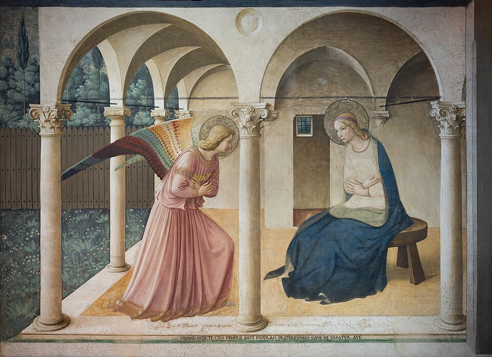
Annunciazione dell'arcangelo Gabriele a Maria
Prefazione
Lo chiamerai Gesù. Sarà grande e verrà chiamato Figlio dell'Altissimo. Lc 1,31-32
Il nome Gesù è il nome con cui Dio stesso, la seconda Persona della Santissima Trinità, ha voluto essere chiamato nella Sua natura umana. Questo nome ci è stato portato dal cielo, poiché risuonò per la prima volta qui sulla terra dalla bocca dell'arcangelo Gabriele. Questo nome è l'espressione del senso e dello scopo dell'Incarnazione, cioè la redenzione, perché Gesù significa in ebraico Salvatore. Questo nome fu poi scritto anche sul legno della croce sul Golgota e da allora adorna tutte le croci e le raffigurazioni della croce.
Egli umiliò se stesso facendosi obbediente fino alla morte e a una morte di croce. Per questo Dio lo esaltò e gli donò il nome che è al di sopra di ogni nome, perché nel nome di Gesù ogni ginocchio si pieghi nei cieli, sulla terra e sotto terra, e ogni lingua proclami: «Gesù Cristo è Signore!», a gloria di Dio Padre. Fil 2,8-11
La redenzione significa partecipazione alla natura divina mediante la grazia redentrice di Cristo. È la beatitudine in Dio già qui sulla terra, nella vita della grazia, e un giorno nella visione beatifica di Dio. Nel libro del profeta Abacuc si legge questa bella affermazione nella versione latina della Vulgata: Exultabo in Deo Iesu meo, (Ab 3,18) cioè esulterò in Dio, mio Gesù (= Salvatore). La nostra beatitudine eterna consisterà nell'esultare in Gesù, nostro Dio e Salvatore, cioè nel Dio trinitario per mezzo di Lui.
Riceveremo in cielo un nome nuovo (cfr. Ap 2,17) e sulla fronte dei salvati sarà scritto il nome di Dio (cfr. Ap 3,12), cioè il nome di Gesù e il nome del Padre (cfr. Ap 14,1). Già nell'Antica Alleanza Dio ci ha promesso: Quelli che portano il mio nome e che per la mia gloria ho creato e plasmato e anche formato. (Is 43,7) Questo nome, nel quale Dio ha formato gli eletti, cioè coloro che alla fine saranno salvati, è il nome del nostro Redentore. San Paolo insegna che l'uomo nuovo viene rinnovato secondo l'immagine di colui che lo ha creato. (cfr. Col 3,10)
La missione della Chiesa consiste nel portare fino ai confini della terra la redenzione di Cristo e con essa il Suo nome, come il Signore disse di Paolo, da poco convertito: affinché porti il mio nome dinanzi alle nazioni, ai re e ai figli d'Israele. (At 9,15) Questa è infatti la volontà di Dio: che tutti credano nel nome del Suo Figlio. (cfr. 1 Gv 3,23) Non vi è infatti, sotto il cielo, altro nome dato agli uomini, nel quale è stabilito che noi siamo salvati, (At 4,12) e chiunque invocherà il nome del Signore sarà salvato. (cfr. At 2,21)
Il compito dei cristiani consiste nel glorificare Dio nel nome «cristiano». (cfr. 1 Pt 4,16) Dai primi tempi della Chiesa Clemente Alessandrino (inizio del III secolo) ci tramanda questa commovente affermazione sulla dignità dei cristiani:
Tutti i veri credenti sono nobili e simili a Dio e degni del nome di cristiano, che portano come una corona regale. Quis div. salv. 36,1
Il compito del cristiano consiste però anche nel confessare il nome di Gesù davanti agli uomini (cfr. Mt 10,32) e nel chiedere che ogni lingua proclami che Gesù Cristo è Signore. (Fil 2,11) Per questa confessione la Chiesa e i veri cristiani sono odiati dal mondo, come lo stesso Signore ci ha detto: Sarete odiati da tutti a causa del mio nome. Ma chi avrà perseverato fino alla fine sarà salvato. (Mc 13,13) Eppure per un vero cristiano dev'essere una gioia subire oltraggi per il nome di Gesù. (At 5,41)
Ogni vero cristiano deve lasciarsi guidare in tutto ciò che fa da questa parola del Salmo: Non a noi, Signore, non a noi, ma al tuo nome da' gloria. (Sal 115,1) Se con l'aiuto di Dio pensiamo e agiamo in questo modo, Dio ci concederà la grazia che, al momento di lasciare questa vita terrena, avremo l'ineffabile gioia di pronunciare con il cuore e con la bocca il Nome più santo, più potente e più dolce di tutti, il nome Gesù, oppure, con san Filippo Neri, esclamare: Gesù mio! Gesù, sii per me Gesù!
25 gennaio 2021, festa della conversione dell'apostolo Paolo
+ Athanasius Schneider, vescovo ausiliare dell'arcidiocesi di Maria Santissima in Astana
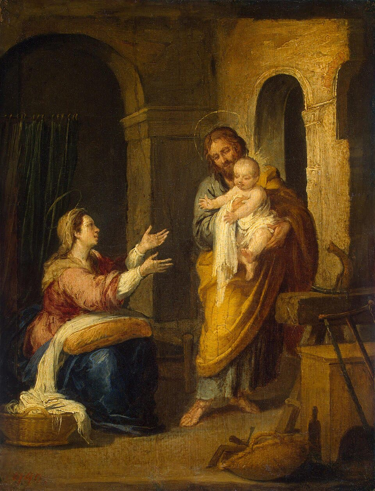
La Sacra Famiglia: Maria, Giuseppe e il Bambino Gesù
Testimoni della potenza del Santissimo Nome di Gesù
Fin dagli inizi della Chiesa la potenza e la sapienza inesplorabili nascoste nel Santissimo Nome di Gesù sono state riconosciute come meravigliose e uniche. In questo mistero del Nome divino sono penetrate certamente la Madre di Dio Maria e san Giuseppe più profondamente di chiunque altro. Dio ha affidato loro il Suo Figlio unigenito, per trasmettere a tutta l'umanità fiumi di grazie dal cuore del Redentore. Perciò possiamo chiedere con fiducia filiale il dono dell'amore per il Santissimo Nome di Gesù dalle loro mani, poiché Maria e Giuseppe sono le nostre guide più sicure sulla via della preghiera incessante del cuore.
Sant'Ignazio pronunciava molto volentieri il nome di Gesù. Di lui si racconta: quando gli apostoli discutevano tra loro su chi di loro sarebbe stato il più grande nel regno dei cieli, Gesù venne con loro a Cafarnao, chiamò a sé un bambino di quattro anni che stava sulla soglia di casa accanto a sua madre, lo prese per mano e disse agli apostoli: Se non vi convertirete e non diventerete come i bambini, non entrerete nel regno dei cieli. Perciò chiunque si farà piccolo come questo bambino, costui è il più grande nel regno dei cieli. (Mt 18,3ss)
Questo fanciullo Ignazio, negli anni successivi, andava spesso nel luogo dove il Salvatore lo aveva chiamato, baciava il suolo di quel luogo e diceva ai suoi compagni: Ecco, in questo luogo Gesù mi ha preso tra le braccia.
Ignazio crebbe, divenne poi sacerdote e vescovo nella grande città di Antiochia, dove prima san Pietro aveva operato per sette anni. Antiochia divenne presto cristiana. Quando l'imperatore romano Traiano giunse ad Antiochia durante la sua campagna militare e trovò vuoti i templi degli idoli, chiese al governatore chi fosse responsabile del fatto che i templi fossero vuoti. Il governatore disse: Il vescovo dei cristiani, Ignazio, ne è responsabile. Allora l'imperatore fece comparire davanti a sé il vescovo anziano e gli chiese: Sei tu lo spirito maligno che in questa città provoca tanto tumulto? Ignazio rispose: Non è uno spirito maligno colui che porta Dio nel cuore! L'imperatore disse: Intendi forse Gesù di Nazaret? Il vescovo lo confermò e istruì l'imperatore sulla stoltezza del culto pagano degli idoli. Questi si adirò e disse ai soldati: Ad leonem, cioè: davanti ai leoni. I cristiani di Roma volevano liberarlo e impedire la sua morte. Ma Ignazio scrisse loro una lettera e li pregò di non strappargli la corona del martirio. Giunto a Roma, fu esposto nell'anfiteatro, davanti a una folla immensa, a due leoni affamati.
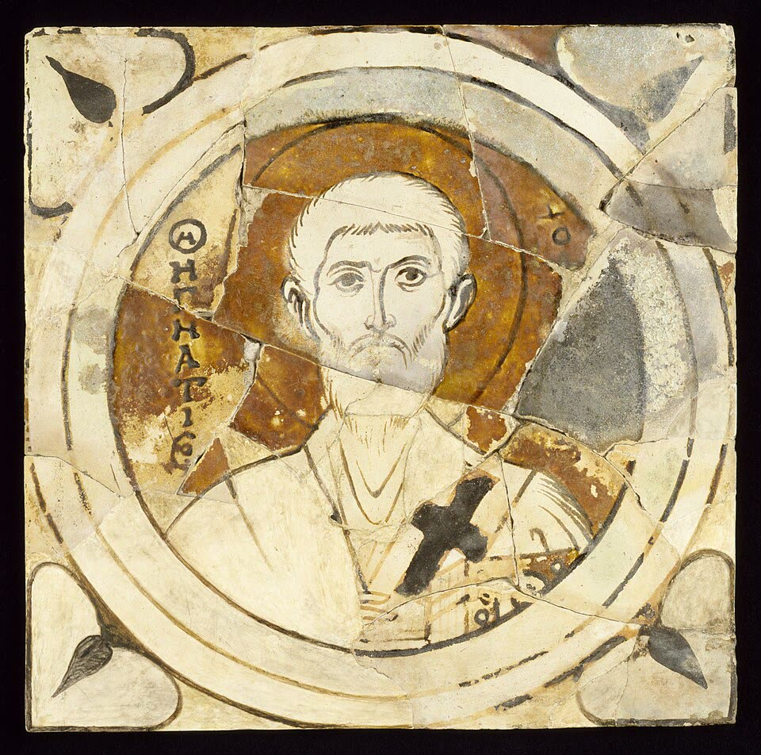
Sant'Ignazio di Antiochia
Prima, sant'Ignazio pronunciò ad alta voce una preghiera e disse: Il nome di Gesù non può allontanarsi dalla mia bocca; e anche se lo facesse, Egli non può essere cancellato dal mio cuore. Tutti gli spettatori pagani si meravigliarono della fermezza e della morte gioiosa di questo anziano. I leoni lo sbranarono e ne lasciarono solo alcune ossa e il cuore. Nel cuore era leggibile il nome Gesù, formato da vene azzurre. I compagni di viaggio di sant'Ignazio, di notte, presero dall'anfiteatro le sue reliquie e le portarono ad Antiochia, dove furono conservate sull'altare e tenute in grande onore. Ciò avvenne nell'anno 107. Dio ha dunque distinto questo santo, poiché aveva tenuto in altissimo onore il nome di Gesù.1
A san Gregorio di Tours (538–594) il suo angelo custode diede il consiglio di scrivere il nome di Gesù su un piccolo cartoncino e di metterlo sotto il cuscino del padre malato; questi guarì presto.
San Leonardo da Porto Maurizio (1676–1751) raccomandava di appendere alle porte un cartoncino con il nome di Gesù: così molti furono preservati da malattie e disgrazie di ogni genere.
1 Fonte: Spirago 796, op. cit.
Il santo re Edmondo d'Inghilterra (840–870), poi arcivescovo di Canterbury, fu istruito da Gesù stesso sulla potenza del Suo Santissimo Nome. Un giorno, mentre Edmondo era solo in viaggio, gli apparve un fanciullo bellissimo che gli chiese: Edmondo, non Mi conosci? Edmondo rispose di no. Il fanciullo gli disse allora: Guarda Me e capirai chi sono. Edmondo fissò il bambino e vide sulla fronte le lettere luminose INRI Iesus Nazarenus Rex Iudaeorum (Gesù di Nazaret, re dei Giudei). Allora il bambino disse: Ora sai chi sono. Vedi il Mio nome. Imprimilo nel tuo cuore. Scrivilo ogni sera sulla tua fronte, facendo il segno della croce e pronunciando le parole: Gesù di Nazaret, re dei Giudei. Questo ti preserverà da una morte improvvisa.
O Dio, mio re, voglio esaltarti e benedire il tuo nome in eterno e per sempre. Sal 145,1
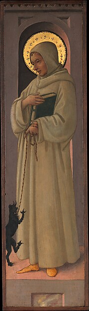
San Bernardo di Chiaravalle in preghiera
San Bernardo di Chiaravalle (1090–1153) scrive ai suoi monaci: Ciò che ho sempre sulle labbra, ciò che ho sempre nel cuore, ciò che scrivo senza sosta, ciò che nel profondo costituisce la mia filosofia, è Gesù, e precisamente Gesù come il Crocifisso.
Nel suo commento al Cantico dei Cantici descrive la somiglianza dell'olio con il nome di Gesù, che si fonda su tre proprietà: l'olio alimenta il fuoco, nutre il corpo e lenisce il dolore. È dunque luce, cibo e medicina. Osserva ora gli stessi effetti nel nome dello Sposo: se lo si predica, illumina; se lo si contempla, nutre; se lo si invoca, unge e lenisce. Dice il Signore: Invocami nel giorno dell'angoscia e ti libererò. (Sal 49,15; CEI 50,15) […] Ecco, anima mia, nel nome di Gesù hai custodito come in un flacone il tuo elisir. È assolutamente efficace e non mancherà mai di agire in tutte le tue malattie. Oh, porta sempre questa medicina sul tuo petto, tienila sempre a portata di mano, affinché tutto il tuo pensare e agire sia rivolto a Gesù.
Aroma che si spande è il tuo nome. Ct 1,2 (CEI 1,3)
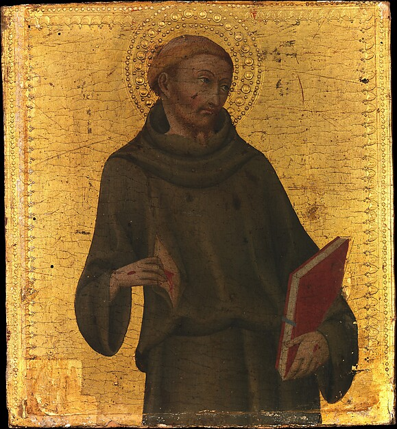
San Francesco
Sul grande amore di san Francesco (1181–1226) per il Santissimo Nome di Gesù, Tommaso da Celano scrive come immerso in preghiera: È impossibile comprendere umanamente la sua commozione interiore, quando proferiva il Tuo nome, santo Signore. Allora, ricolmo di giubilo e traboccante di castissima gioia, sembrava veramente un uomo nuovo e di un altro mondo. […]
Celano descrive anche come san Francesco contemplava continuamente l'Incarnazione e la Passione di Gesù: Soprattutto l'umiltà dell'Incarnazione di Gesù e l'amore dimostrato dalla sua passione occupavano a tal punto i suoi pensieri che difficilmente voleva pensare ad altro. […] Quando nominava il Bambino di Betlemme o Gesù, passava quasi la lingua sulle labbra, assaporando e sorbendo con il suo palato beato la dolcezza di questo nome.
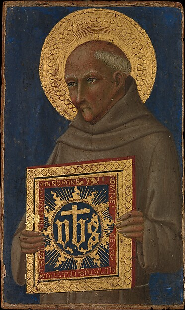
San Bernardino da Siena
200 anni dopo, un figlio spirituale di san Francesco, san Bernardino da Siena (1380–1440), divenne portabandiera del nome di Gesù. Non tenne mai una missione popolare senza una predica ardente sul nome di Gesù, la cui venerazione riconobbe come il grande rimedio contro l'abbandono della fede. Nella sua biografia si legge: Quando infine vide che il glorioso nome, che è al di sopra di ogni nome, (Fil 2,9) era quasi caduto nell'oblio nei cuori degli uomini, sorse in lui il desiderio, da vero imitatore dell'Apostolo, di portare questo nome davanti a tutti i re, le stirpi e i popoli. (cfr. At 9,15)
Cercò di procurarsi una piccola tavola di legno su cui questo nome fosse dipinto o disegnato in lettere d'oro. Questa tavola mostrava a tutte le folle che ogni giorno affluivano alle sue prediche. Con voce alta annunciava loro: Questo è il vostro distintivo, questa è l'arma del popolo di Dio! Questo è il nome, carissimi fedeli, e non ve n'è un altro nel quale possiate essere salvati. (cfr. At 4,12) Questo è inoltre il nome che porta salvezza ed è pieno di amabilità, la cui immagine possiate portare indelebile sul petto e là contemplare ogni giorno, e affiggere nelle piazze, e che ciascuno di voi deve dipingere, visibile e in dignitosa bellezza, sull'architrave della sua casa.
Questo è il nome che dovete avere davanti agli occhi nei giorni di felicità e invocare nei giorni di sventura, secondo l'insegnamento dell'Apostolo. Questo nome santo sta scritto anzitutto nel libro della vita, come attesta il profeta; poi sull'iscrizione della croce della nostra redenzione, come leggiamo nel Vangelo, (cfr. Gv 19,19) e ancora sta scritto sulla fronte di ogni santo nella patria eterna.2 (cfr. Ap 22,4)
Per il trionfo e la glorificazione del nome vittorioso di Gesù, per la salvezza delle anime e in riparazione delle offese al Santissimo Nome di Gesù, san Bernardino raccomandava agli uomini tre concrete forme di venerazione:
- La preghiera incessante del cuore mediante l'invocazione del Santissimo Nome di Gesù
- Il monogramma del Nome di Gesù come segno esteriormente visibile
- La diffusione zelante della devozione al Santissimo Nome di Gesù
Cantate al Signore, benedite il suo nome, annunciate di giorno in giorno la sua salvezza. Sal 96,2
2 Das Leben des heiligen Bernardin von Siena, tradotto da Lothar Schläpfer OFMCap, a cura di W. Nigg e W. Schamoni, Düsseldorf 1967.
Vivere alla luce del Santissimo Nome di Gesù
La chiave della vita spirituale è la preghiera di Gesù. San Geronda Porfirio
Consideriamo la nostra anima come un castello fatto di un sol diamante o di un tersissimo cristallo, nel quale vi sono molte mansioni, come in cielo vi sono molte dimore. (cfr. Gv 14,2) Non trovo nulla con cui poter paragonare l'eccelsa bellezza e la capacità di un'anima. Secondo la mia esperienza, la preghiera e la meditazione sono la porta attraverso cui si può entrare nel castello. Santa Teresa d'Avila
La chiave del Figlio di Davide
Il nome di Gesù è la più breve preghiera del cuore e la chiave per entrare nel castello misterioso della nostra anima, che è stata creata attraverso Gesù e per Gesù. (cfr. Col 1,12)
Così parla il Santo, il Veritiero, Colui che ha la chiave di Davide: quando egli apre nessuno chiude e quando chiude nessuno apre. […] Per quanto tu abbia poca forza, hai però custodito la mia parola e non hai rinnegato il mio nome. […] Il vincitore lo porrò come una colonna nel tempio del mio Dio e non ne uscirà mai più. Inciderò su di lui il nome del mio Dio e il nome della città del mio Dio, della nuova Gerusalemme, […] insieme al mio nome nuovo. Ap 3,7-12
Gesù, che ci ha aperto il cielo come Redentore, possiede anche la chiave della nostra anima. Solo per mezzo di Gesù possiamo riconoscere davvero come Dio ci ha pensati e quale vocazione ci ha posto nel cuore per il tempo e per l'eternità. Il nome di Gesù è per così dire la parola d'ordine per la nostra anima, ma anche la chiave per riconoscere e comprendere rettamente il nostro prossimo. In questo senso un monaco della Chiesa d'Oriente ci spiega: A tutti gli uomini e le donne dovremmo avvicinarci per strada, nel negozio, in ufficio, in fabbrica, sull'autobus, dove facciamo la fila, ma soprattutto a coloro che ci sono antipatici, con il nome di Gesù nel cuore e sulle labbra. Su di loro dovremmo pronunciare il Suo nome, perché il loro vero nome è il nome Gesù. In loro venera Cristo, in loro servi Cristo. In molti di questi uomini e donne Gesù è imprigionato. LiberaLo riconoscendoLo e venerandoLo in loro. Se attraversiamo il mondo con questo nuovo sguardo, pronunciando Gesù su ogni uomo, allora essi saranno trasformati e trasfigurati davanti a noi. Quanto più ci doniamo servendo gli uomini, tanto più chiara e viva sarà in noi la nuova visione.3
E se facciamo la dolorosa esperienza di essere feriti o offesi dai nostri simili, ci aiuta la parola del pellegrino russo: Quando qualcuno mi offende, penso soltanto a quanto è dolce la preghiera di Gesù; subito l'offesa e ogni ira svaniscono, e dimentico tutto.4
3 Im Namen Jesu ist Heil, da un monaco della Chiesa d'Oriente, tradotto da dott. Oswald Loretz, Innsbruck 1959, pp. 58–59, Imprimatur dell'Amministrazione apostolica di Innsbruck n. 2557/2 del 31.12.1958.
4 La preghiera di Gesù aiuta a riconoscere Cristo in tutti gli uomini e tutti gli uomini in Cristo. Perciò la preghiera di Gesù non ha nulla a che fare con la fuga dal mondo o con la negazione del mondo. Al contrario, è una forma di estrema affermazione della vita. La preghiera di Gesù non contiene alcun rifiuto della creazione di Dio; mostra piuttosto un altissimo apprezzamento per tutti gli uomini e per tutte le cose in Dio. Il nome di Gesù può diventare una chiave mistica per questo mondo, uno strumento dell'offerta nascosta di tutte le cose e di tutti gli uomini, poiché imprime al mondo il sigillo divino. (Kallistos Ware, Hinführung zum Herzensgebet, Freiburg 1982, pp. 72–73, Imprimatur: Friburgo in Brisgovia, 13.09.1982)
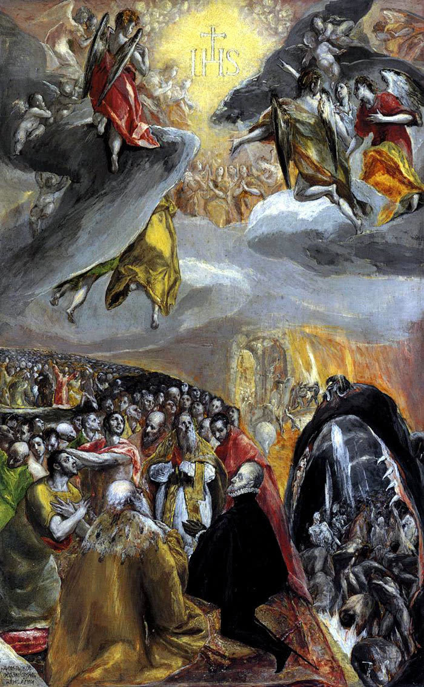
L'adorazione del Nome di Gesù (El Greco)
L'invocazione del Santissimo Nome di Gesù
Il vescovo Johann Michael Sailer scrive sull'invocazione del Santissimo Nome di Gesù: Chiunque invocherà il nome del Signore sarà salvato. (Rm 10,13) Questa è la promessa di tutte le promesse, perché non esclude nessuno che invoca il nome del Signore e a ciascuno promette il bene supremo. […] Questa promessa non fa attendere un dono piccolo, ma il bene supremo: chi invoca il nome del Signore sarà beato. La beatitudine, il bene supremo dell'uomo, viene dal Signore, che è ricco per tutti.
Se il Signore, che è ricco per tutti, deve dare, allora i bisognosi devono accettare ciò che viene loro offerto. Chi non riconosce i propri peccati, la propria miseria, la propria povertà, o non vuole dare onore al nome del Signore e lasciare che per mezzo di Lui diventi ricco, non invoca il Signore come suo Signore; disprezza dunque il dono delle Sue mani, resta povero e miserabile, resta peccatore e conserva la maledizione del peccato, resta senza amore e senza beatitudine. Chi invece riconosce il proprio peccato e la propria povertà di amore e di beatitudine, chi in Cristo riconosce il suo Signore, che è ricco per tutti, Gli parla anche così: Tu che sei ricco per tutti, sii tale anche per me! Insegnami ad amare come Tu hai amato. Sii anche la mia salvezza e rendimi beato nell'amore! Così parla e riceve un dono dopo l'altro, e può amare il suo Signore ed essere beato in Lui con amore.
Se pronunciamo il nome di Gesù con timore reverenziale e amore, ci uniamo al nostro Redentore e Salvatore, che per mezzo dell'invocazione del Suo Santissimo Nome si fa subito presente Egli stesso e tocca e arricchisce la nostra anima con la Sua grazia.5 Poiché quando invochiamo il Suo nome, facciamo discendere su di noi, al tempo stesso, i meriti della Sua redenzione, che per mezzo di questo atto con cui ci rivolgiamo al nostro Signore e Dio tornano a essere efficaci.
Quando ciò diventa davvero chiaro per noi, questa verità beatificante irradia tutto il nostro cuore, e la via regale dell'invocazione del Santissimo Nome di Gesù diventa il battito della nostra vita.
5 La potenza e la gloria di Dio sono presenti ed efficaci nel Suo nome. Il nome di Dio è la divinità presente: «Emmanuele – Dio con noi». Nel momento in cui si invoca con attenzione e consapevolezza il nome di Dio, ci si pone nella Sua presenza, ci si apre alla Sua forza e ci si consegna come strumento e offerta nelle Sue mani. Un tale contatto ci procura una maggiore misura di vita soprannaturale e di amore del prossimo. Perciò l'invocazione del Santissimo Nome di Gesù ha un carattere sacramentale tutto proprio. (Ibid., p. 134)
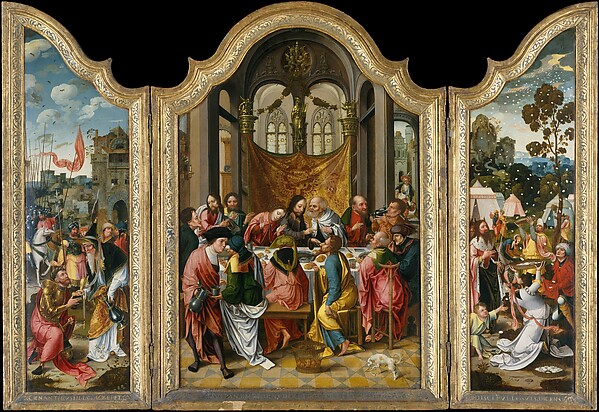
L'Ultima Cena
La nostra anima è una sala del cenacolo, in cui l'Ultima Cena può essere celebrata in ogni tempo. In segreto Egli ci dice, come un tempo: Ho tanto desiderato mangiare questa Pasqua con voi. (Lc 22,15)
Nell'Eucaristia visibile Gesù è offerto sotto le specie del pane e del vino. Nell'Eucaristia interiore del nostro cuore Egli può essere indicato e chiamato soltanto mediante il Suo Santissimo Nome. Perciò possiamo fare dell'invocazione del Santissimo Nome una comunione spirituale.6
Al tuo nome e al tuo ricordo si volge tutto il nostro desiderio. Is 26,8
6 Ibid., p. 67.
La luce del nome di Gesù risplende attraverso il cuore e illumina così tutto l'universo. Padre Sergej Bulgakov
La ripetizione del nome di Gesù è paragonabile al battito d'ali dell'uccello che si leva in volo. Non deve mai essere faticosa e forzata, frettolosa o rumorosa. Deve essere delicata, leggera e – nel senso più profondo della parola – graziosa. Quando l'uccello ha raggiunto l'altezza desiderata, plana nel suo volo e solo di tanto in tanto batte le ali per mantenersi nell'aria. Così anche l'anima che ha accolto il pensiero di Gesù ed è colma del «pensare a Lui» può lasciar cadere la ripetizione del nome e riposare nel nostro Signore. Quando altri pensieri minacciano di scacciare il pensiero di Gesù, allora ricomincia l'invocazione, per riprendere nuovo slancio.7
Amate la preghiera, il colloquio con il Signore. Tutto sta nell'amare, nell'essere innamorati del Signore, di Cristo, lo Sposo. San Geronda Porfirio
7 Im Namen Jesu ist Heil, p. 26.
Chi crede in me, come dice la Scrittura: dal suo grembo sgorgheranno fiumi di acqua viva. Gv 7,37
La preghiera di Gesù è come una corrente spirituale invisibile, che riversa incessantemente la forza di Dio – la Sua santa grazia – dalla sorgente sempre fluente, Gesù Cristo, nella nostra anima; essa non diventa mai priva di forza, ma, nella misura in cui il nostro volume spirituale si amplia, accresce ancora i suoi flussi di grazia. Schemamonaco Ilarione
Dal sorgere del sole al suo tramonto sia lodato il nome del Signore! Sal 113,3
Pace e riconciliazione nel Santissimo Nome di Gesù
In che modo giungiamo alla pace e alla riconciliazione attraverso il nome di Gesù? Lasciamo di nuovo parlare il nostro monaco della Chiesa d'Oriente:
Il nome stesso è un mezzo di purificazione e di perfezionamento. Una pietra di paragone e un filtro, attraverso il quale devono passare i nostri pensieri, parole e azioni, per essere liberati dalle loro impurità. […] Quando siamo tentati, il nome di Gesù ci porta vittoria e pace. Un cuore che è già colmo del nome di Gesù e della presenza del nostro Signore non indugia in alcun pensiero o immagine peccaminosa. Ma noi siamo deboli, e spesso la nostra difesa crolla, e allora la tentazione è come un'acqua impetuosa. In un tale caso non guardare la tentazione, non lottare con il tuo desiderio, non guardare la tempesta e non guardare te stesso. Guarda il nostro Signore, stringiti a Lui, invoca il Suo Santissimo Nome. Quando Pietro, camminando sull'acqua verso Gesù, vedendo che il vento era forte, s'impaurì (Mt 14,30) e cominciò ad affondare. Quando noi, invece di guardare le onde e il vento, andiamo decisi sull'acqua incontro a Gesù, Egli stenderà la Sua mano verso di noi e ci afferrerà. Poiché chiunque invocherà il nome del Signore sarà salvato. (Gl 3,5)
Il nome di Gesù porta perdono e riconciliazione. Quando abbiamo peccato gravemente (tanto più se abbiamo peccato leggermente), possiamo rivolgerci in un istante, pentiti e nell'amore, al Santissimo Nome e pronunciarlo con tutto il cuore; e il nome così usato (mediante il quale raggiungiamo la persona di Cristo) è già un segno di perdono. Dopo il peccato non vogliamo attendere inerti, rinviare o indugiare. Non esitiamo a riprendere l'invocazione del nome, anche se siamo indegni.8
Mediante l'invocazione del Santissimo Nome di Gesù nella nostra anima ha inizio un particolare processo di purificazione, che porta alla luce tutto ciò che è impuro e non santo, affinché il nostro cuore possa essere guarito. San Giovanni Crisostomo scrive: Il ricordo di Dio svela all'anima ciò che è in lei. Dapprima le diventa chiaro il male nel suo cuore, più tardi anche il bene. Anzitutto il ricordo di Dio mette in movimento ogni potenza diabolica; poi la doma a poco a poco. Così la preghiera può svelare il peccato che abita in noi e poi anche cancellarlo.
8 Im Namen Jesu ist Heil, pp. 34, 42–44.
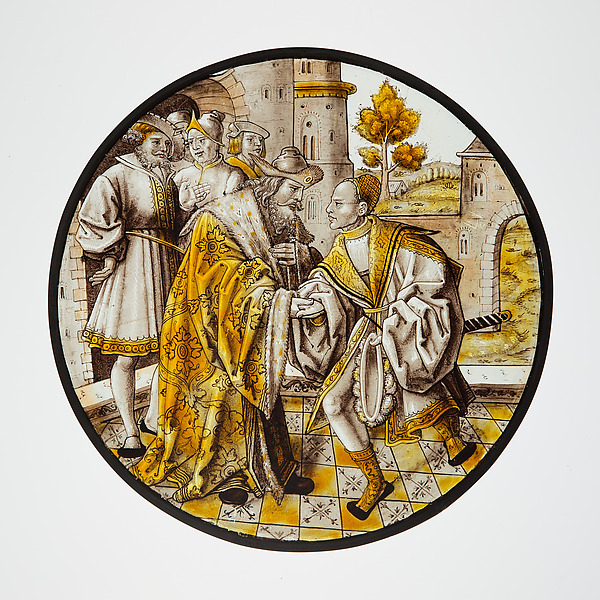
Cristo e il figlio prodigo
Il nome di Gesù Cristo penetra nelle profondità del cuore, doma l'avversario che vi regna, libera e ridona vita all'anima. Su questo cammino di purificazione il sacramento della Riconciliazione è di somma importanza per la nostra crescita spirituale.9
Quando la sera, nell'esame di coscienza, ci inginocchiamo come il figlio prodigo ai piedi del Padre celeste e diciamo: non sono più degno di essere chiamato tuo figlio (Lc 15,19) e ci consegniamo volontariamente al giudizio di Dio, per dare a Dio l'onore che Gli è dovuto, allora il nostro angelo si metterà al nostro fianco. Ci mostra la pienezza della misericordia di Dio, la pienezza dei doni e delle grazie che ci sono state concesse e ci chiediamo:
Come abbiamo impiegato la mina che ci è stata affidata – sia essa il dono di educare, guidare, consigliare, aiutare, guarire o amare? Non è forse la nostra vita fatta soltanto di «negligenze», di «voler fare» e di «non aver fatto»? Allora scendono dai nostri occhi le lacrime di pentimento, e preghiamo:
9 Ricevi sempre il sacramento della Penitenza con zelo, fiducia, rispetto e dolore interiore per i tuoi peccati. Questo mezzo di grazia reca grande spavento al diavolo, che si dà molta pena per trattenere le anime dal riceverlo, o per indurle a riceverlo con tiepidezza, abitudinariamente, senza pentimento e senza le altre condizioni necessarie. (Maria d'Agreda, Leben der Jungfrau und Gottesmutter Maria, vol. 4, p. 212, Jestetten 1982, Imprimatur: Ordinariato arcivescovile di Salisburgo, 31 maggio 1954, prot. 1311)
Signore, allontànati da me, perché sono un peccatore! Lc 5,8
Ma Dio colma sempre la misura dei Suoi atti, del Suo amore per noi. Si china verso di noi e prende la nostra misura. Ecco: sui nostri piccoli cocci giacciono le gocce di sangue del nostro Signore, le gocce di sudore della Sua agonia, con le quali Egli ha coperto tutta la nostra colpa e la nostra impotenza. E là giace il Cuore Immacolato di nostra Madre, i cui figli siamo. E il cuore della madre è così grande e ampio che riempie la misura fino all'orlo, e in più il nostro angelo vi depone il suo Sanctus, che prega ininterrottamente con noi e per noi, finché la misura è stracolma.
E Dio compie l'inconcepibile. Lo accoglie come se venisse da noi e ci stringe con amore tra le Sue braccia, come il figlio prodigo.
(Da una santa dei primi secoli cristiani)
Se la vostra anima ripete con riverenza e desiderio queste sette parole: «Signore Gesù Cristo, abbi misericordia di me», non ne sarà mai sazia! Ditele per tutta la vita! Racchiudono tanta linfa! San Geronda Porfirio
Fate tutto nel nome del Signore Gesù
Nella sua scuola della preghiera del cuore, Teofane il Recluso ci consiglia: Lavora e recita la preghiera di Gesù, perché Dio ti benedica.10 La cosa principale è camminare alla presenza di Dio, cioè vivere sotto lo sguardo di Dio, nella consapevolezza che Dio ci vede, che Egli cerca la nostra anima e il nostro cuore. Questa consapevolezza è la leva più forte in tutto il meccanismo della vita spirituale. Poiché la preghiera di Gesù è una lampada per i nostri passi e una stella polare sul nostro cammino verso il cielo.11
Fare tutto nel nome del Signore significa essere del tutto orientati alla Sua glorificazione, impegnarsi a fare tutto per il Suo compiacimento, perché è la Sua volontà. Ciò vuol dire: avvolgere ogni azione nella preghiera, cominciarla con la preghiera e concluderla con la preghiera. Quando iniziamo, chiediamo la benedizione di Dio; nel corso del lavoro invochiamo il Suo aiuto e alla fine Gli rendiamo grazie, perché si è degnato di compiere la Sua opera in noi e attraverso di noi.12
Pensa Tu in me, o Gesù, allora penso chiaro e lucido. Parla Tu attraverso di me, o Gesù, allora parlo mite e veritiero. Agisci Tu attraverso di me, o Gesù, giusto è allora il mio agire, santificato il mio lavoro, santificato anche il mio riposo. Penetra tutto il mio essere, riempi tutta la mia esistenza, affinché in me si possa leggere il Tuo grande amore.
10 Il Nome di Gesù può essere usato da solo o unito a una frase più o meno breve. Presso i cristiani d'Oriente la forma più diffusa è: «Signore Gesù Cristo, abbi pietà di me!» Più semplicemente: «Gesù Cristo» o «Signore Gesù». La forma più breve dell'invocazione è il solo Nome «Gesù».
11 La preghiera è azione; chi prega è attivissimo. Di nessuna preghiera ciò vale più che della preghiera di Gesù. L'invocazione del nome, praticata correttamente, porta ciascuno più profondamente al proprio lavoro; ognuno diventa più capace nel suo agire, senza isolarsi dagli altri, ma unito a loro. Diventa più sensibile per le loro paure e preoccupazioni, come mai prima. La preghiera di Gesù rende ciascuno un «uomo per gli altri». (Hinführung zum Herzensgebet, p. 72)
12 Schule des Herzensgebetes, Die Weisheit des Starez Theophan, Salzburg 1985.
E qualunque cosa facciate, in parole e in opere, tutto avvenga nel nome del Signore Gesù, rendendo grazie per mezzo di lui a Dio Padre. Col 3,17
Il tempo della vita è tempo di grazia
La salvezza, che Dio vuole donarci già in questa vita, è sempre legata all'ora giusta, che non ritorna mai. Poiché così dice il Signore: Al tempo della benevolenza ti ho risposto, nel giorno della salvezza ti ho aiutato. (Is 49,8)
I nostri anni sono come coppe di cristallo che Dio ci presta. Noi però dobbiamo riempirle e restituirle colme nelle mani di Dio, che le custodisce per l'eternità.
- Offriamo a Dio all'inizio della giornata il primo istante e diamo al nostro lavoro quotidiano la direzione verso Colui che è Signore di ogni tempo e Padre dell'eternità: Tutto a onore del mio Dio!
- Felici tutti coloro che ogni giorno, con il segno della croce e con l'esercizio della preghiera del cuore, si pongono sotto la protezione e la sicurezza dell'amore di Dio.
- Felici i genitori che si prendono il tempo di dare ai loro figli l'esempio della preghiera, per insegnare loro il colloquio con Dio. Avranno gioia da loro.
- Felici i giovani che, attraverso il contatto con Gesù, Lo tengono nei loro cuori e camminano nella vita radiosi per Lui, tenuti per la mano materna di Maria. La loro preghiera è: Fammi somigliare sempre più a Te! Lascia che il Tuo splendore riposi su di me e che io diventi, per il mio ambiente, una forza che irradia il bene.
Ancora una cosa vorrei affidare ai miei cari figli: che tengano sempre aperto il cuore al Salvatore e non lascino che la paura di Lui li allontani da Lui. Noi tutti pecchiamo, perché siamo uomini; ma se non ci rivolgiamo con fiducia a Cristo, da chi dovremmo andare, e di chi potremmo fidarci?
Dalle ultime esortazioni di Friedrich Leopold Stolberg (1750–1819) ai suoi figli
Chiedere e ringraziare nel nome di Gesù
Nel Vangelo di Giovanni Gesù promette più volte che esaudirà le nostre richieste, quando ci appelliamo al Suo nome. E qualunque cosa chiederete nel mio nome, la farò. (Gv 14,13)
Quante volte però abbiamo già pregato e secondo il nostro giudizio umano apparentemente non siamo stati esauditi? Ma se siamo sinceri, dobbiamo chiederci: abbiamo davvero pregato nel nome di Gesù? Cioè: abbiamo posto con Gesù la nostra volontà nella volontà del Padre? I discepoli dovevano in ogni caso sentire la parola di Gesù: Finora non avete chiesto nulla nel mio nome. (Gv 16,23; CEI 16,24) E conosciamo un po' le richieste degli apostoli, che pensavano ai regni terreni e volevano sottrarsi alla sofferenza. Se la nostra preghiera va nella direzione di non volere altro che il compimento della volontà di Dio e delle Sue promesse in noi, allora anche la più piccola preghiera e la più sommessa richiesta vengono esaudite. E questa è la fiducia che abbiamo in lui: qualunque cosa gli chiediamo secondo la sua volontà, egli ci ascolta. (1 Gv 5,14) Dio desidera profondamente colmarci dei Suoi doni. E quale dono potrebbe essere più grande della Sua volontà divina e santissima? Non stanchiamoci mai di lodare Dio, di chiedere il Suo aiuto e la Sua grazia e di ringraziarLo con tutto il cuore. Poiché ogni ringraziamento è come una nuova richiesta, attraverso la quale riceviamo ancora altre grazie. In questo senso l'apostolo Paolo ci esorta: In ogni circostanza fate presenti a Dio le vostre richieste con preghiere, suppliche e ringraziamenti. (Fil 4,6)
Abbà, caro Padre, esaudiscimi per amore del nome di Gesù, Tuo amatissimo Figlio!
Nel momento in cui lo spirito umano si mette in moto per pregare, la grazia divina lo visita. San Geronda Porfirio

Cristo guarisce un cieco
Guarigione e liberazione nel nome di Gesù
Per rafforzarci nella fede e proteggerci dal male, il famoso esorcista P. Gabriele Amorth ha messo per iscritto molte delle sue esperienze: Oggi c'è un gran numero di sacerdoti e persino di vescovi scrive P. Amorth, che non credono più al diavolo e all'esorcismo. Quando si dice loro che Gesù ha guarito numerosi indemoniati, rispondono che il termine «indemoniato» è un'espressione derivata dalla lingua e dalla cultura di quel tempo, che indicava come posseduti da demoni, quelli che in realtà erano soltanto malati. Il Vangelo, però, distingue chiaramente le due condizioni: Gesù guarisce i malati e libera gli afflitti dai demoni.
Di conseguenza il Signore risorto conferisce due diversi poteri: Questi saranno i segni che accompagneranno quelli che credono: nel mio nome scacceranno demòni […] imporranno le mani ai malati e questi guariranno. (Mc 16,17)
Non solo gli esorcisti incaricati dal vescovo possono liberare le anime tormentate dall'influsso demoniaco, ma anche tutti coloro che credono nel nome di Gesù con dedizione totale, come dice il Signore nel Vangelo. Di molti santi sappiamo che la loro unione con Cristo ha messo in fuga il male. Pensiamo soltanto a san Benedetto o a santa Caterina da Siena; poiché è sempre Gesù stesso a scacciare Satana. Mille volte P. Amorth ripeteva: Con timore e tremore invoco supplice il Tuo santo nome, affinché mi doni una fede salda e il potere di assalire con sicurezza e fedeltà al Tuo comando questo demonio e di scacciarlo con la forza del Tuo braccio. Per questo Ti prego nel Tuo nome, Gesù Cristo, Tu nostro Signore e nostro Dio …
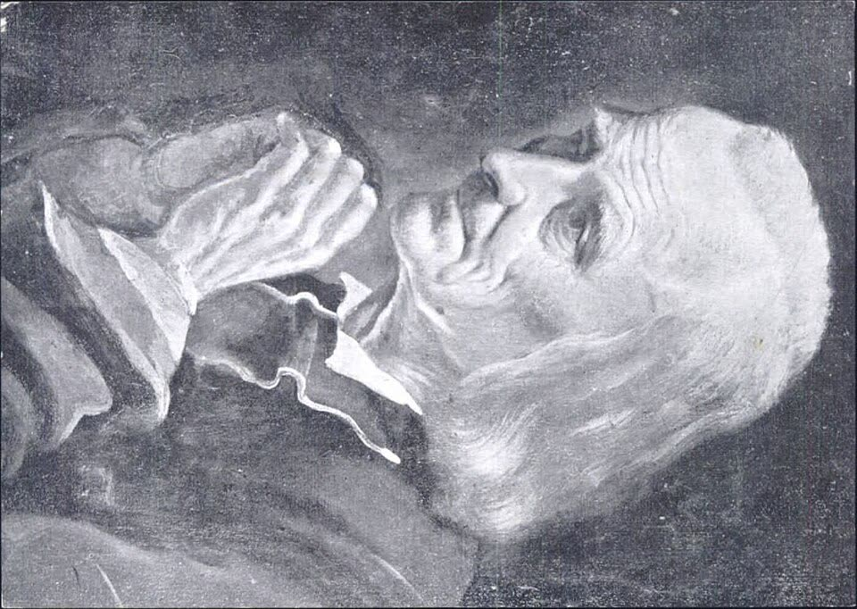
Il santo Curato d'Ars (san Giovanni Maria Vianney)
Inoltre P. Amorth spiega: La potenza del nemico è sempre rimasta la stessa, perché il diavolo ha sempre lo stesso potere. Ciò che invece è enormemente aumentato è il numero delle porte che si sono aperte alla sua irruzione: magia, occultismo, spiritismo, anche una vita nel grave peccato. Oppure pensate a tutte le persone che si consacrano a Satana.
Egli distingue due categorie di vittime dei demoni: da una parte coloro che, senza colpa propria, a causa del loro amore per Dio sopportano disturbi maligni fino alla possessione espiatrice, come il santo Curato d'Ars o santa Mariam di Abellin, ma anche persone che diventano vittime innocenti a causa di maledizioni; dall'altra coloro che si consegnano al potere dei demoni a causa delle proprie colpe, sia perdurando nel grave peccato, come ad esempio Giuda, sia mediante pratiche occulte. Perciò, insegna P. Amorth, i mezzi più importanti nella lotta contro il diavolo sono: la Santa Confessione, la Santa Messa, la Santa Comunione, l'adorazione eucaristica, i Salmi e la recita del Rosario. Solo quando questi mezzi sono esauriti, egli ricorreva, come esorcista, alle preghiere ufficiali che hanno lo scopo di scacciare Satana nel nome di Cristo. Ho compiuto, calcolando grossolanamente, più di settantamila esorcismi, e sono sempre stato colmo di grande compassione, perché ho incontrato casi di sofferenza immensa. Sebbene l'esorcismo sia un ministero sacerdotale molto impegnativo, è anche un compito gratificante, perché il sacerdote vede come nel nome di Gesù vengono liberate persone che nessun medico ha potuto guarire. Qui possiamo pensare alle parole della Sacra Scrittura: Da lui usciva una forza che guariva tutti. (Lc 6,19)13
Se avete un grande amore e se questo amore vi spinge alla preghiera, allora i flutti del vostro amore si riverseranno su colui per cui pregate, e in lui agiranno e intorno a lui saranno uno scudo protettivo. Lo influenzate così e lo conducete al bene. Quando Dio vede la vostra fatica, vi concede la Sua grazia in sovrabbondanza, come anche a colui per cui pregate. San Geronda Porfirio
Preghiera di guarigione e di protezione
Signore Gesù Cristo, Ti ringraziamo per il Tuo amore per noi. Nascondici tutti nelle Tue piaghe e donaci la Tua salvezza. Signore, Ti preghiamo, segnaci con il Tuo sigillo e con quello di Maria, affinché siamo preservati da ogni attacco del Maligno e da ogni sventura. Dalle maledizioni, dalle imprecazioni, dalla possessione, dalla malinconia, dalle depressioni e dalla paura – liberaci, o Signore!
Tu ci dici sempre di nuovo: Non temere, Io sono con te. Perciò non dobbiamo avere paura.
Ti preghiamo, o Signore, concedici per intercessione della Beatissima Vergine Maria la liberazione da ogni maledizione e imprecazione e rallegraci in ogni tempo con la Tua pace. Signore Gesù Cristo, Tu sei pieno di amore per noi uomini e hai ogni potere in cielo e in terra. Toccaci con il Tuo amore che guarisce. Risana tutto ciò che nel nostro cuore, nella nostra anima è ferito e piagato. Guarisci tutti i ricordi della nostra vita che ci fanno male. Guarisci tutte le ferite che altre persone ci hanno inflitto. Guarisci tutto ciò che è ferito e piagato. Poni le Tue mani trafitte e risanatrici su tutte le nostre ferite dell'anima e del corpo, finché siano completamente guarite. Signore Gesù Cristo, Tu conosci anche tutte le malattie del corpo. Toccale Tu con la Tua forza risanatrice, con il Tuo calore risanatore e risana tutti i nostri organi che sono malati. Tu sei infatti il Salvatore del mondo intero!
Padre nel cielo, nel nome di Gesù, Tuo Figlio, Ti preghiamo, donaci in abbondanza il Tuo amore di Padre e fa' che sentiamo ora questo amore anche nel cuore. Amen.14
13 Cfr. Triumph des Herzens, 26ª annata (I) 2019, n. 152.
14 Questa preghiera spontanea di don Klaus Müller (1946–2001) è stata messa per iscritto in seguito. La sua vita fu quella di un sacerdote di vita santa. Per la sua preghiera e la sua intercessione sono avvenuti molti miracoli. Aveva molti carismi, che donava abbondantemente a quanti chiedevano aiuto. Per la protezione da ogni male e per un futuro custodito in Dio, dal 1994 segnava con il sigillo di Dio sulla fronte tutte le persone che glielo chiedevano.
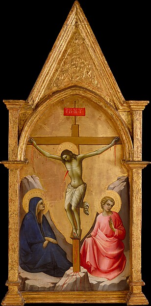
Crocifissione di Cristo con Maria e Giovanni
Il tesoro nascosto
Anche se potessimo chiamare nostri tutti gli atti eroici degli eletti, tutti i patimenti dei martiri, le virtù e i meriti di tutti i santi che hanno vissuto e che vivranno fino alla fine dei tempi, anzi se potessimo chiamare nostre le virtù e i meriti della Santissima Vergine stessa, tutto ciò sarebbe pur sempre soltanto come un granello di sabbia in confronto con una sola offerta di Gesù!
Felice, mille volte felice l'anima che ha trovato Gesù e sa servirsene! Con Gesù ha tutto. Lui le basta.
Questo non vuol dire certamente che la venerazione dei santi sia inutile; poiché, se Cristo corona i loro meriti, corona soltanto i Suoi propri doni. E se offriamo a Dio questi stessi meriti, offriamo a Lui soltanto i meriti del Suo stesso Figlio.
Rallegriamoci dunque di offrire a Dio Padre ciò che è «di Gesù nei santi»; poiché questo è ciò che al Padre in essi è così gradito e ciò che costituirà la loro gloria eterna. La Santissima Vergine Maria occupa una posizione particolare nella gerarchia dei santi, perché più di tutti gli altri è stata unita inseparabilmente a Gesù. Quando diciamo: Maria! ella dice: Gesù! Quando andiamo da Maria, ella ci conduce a Gesù. Maria guardava sempre Gesù, si univa a Gesù, si offriva a Gesù. Gesù era per lei tutto, l'intero contenuto della sua vita. Anche a noi Maria insegnerà a fare di Gesù il nostro «tutto», se glielo chiediamo.
Ma che cosa significa dunque offrire Gesù, servirsi di Lui? Come mai anche in molti libri di devozione questo pensiero viene appena sfiorato?
Offrire Gesù! Significa offrirLo al Padre Suo in espiazione con le parole: Ecco, io non sono che debolezza e miseria; ma Ti offro la forza, la santità, la purezza, le virtù di Gesù. Sono freddo, ma, se avessi tutto l'amore dei Serafini, che cosa potrei darTi che fosse degno di Te? Padre celeste, in compenso della mia freddezza Ti offro l'amore di Gesù. Sono appena caduto, ho mancato: Ti offro la sofferenza e il Sangue di Gesù per la mia purificazione e in espiazione. Questi e quei cattivi moti si impongono a me contro la mia volontà: Ti offro in cambio gli atti contrari di Gesù.
Così anche le nostre debolezze servono ad arricchirci, poiché ci offrono l'occasione di compiere questa offerta infinita, cui forse non avremmo pensato, se non ci fosse capitato qualcosa di male.
Offrire Gesù significa anche offrirLo come santificatore del bene. Mediante questa offerta coloro che non solo uniscono, ma quasi fondono le loro azioni più piccole con l'agire e il lasciare di Gesù, ricevono indietro le loro piccole monete trasformate in pezzi d'oro.
Se, per esempio, ci viene richiesto un atto di obbedienza, ci serviamo dei nostri atti di obbedienza come occasione per offrire al Padre eterno i singoli atti di obbedienza di Gesù, e dirigiamo tutta la nostra attenzione a compierli con la massima perfezione e fedeltà possibile, per ricordarGli così il Suo divino compiacimento. Se si presenta un'occasione di umiliazione, diciamo: Padre celeste, Ti offro le umiliazioni di Gesù. Nella sofferenza non guardiamo a noi stessi, ma offriamo le sofferenze di Gesù.
Quanto ricchi diventeremmo, se sapessimo unirci così in ogni cosa a Gesù e offrirLo al Padre celeste! Facciamo soprattutto l'offerta di Gesù nella Santa Comunione. Egli infatti si dona a noi soltanto per arricchirci e per renderci possibile restituirLo al Padre Suo e offrirLo, e con questa offerta procurarci due beni infiniti: poter offrire a Dio un dono degno di Lui, e attirare così su di noi uno sguardo del Suo amore e del Suo divino compiacimento.
Prima della Santa Comunione offriamo al Padre eterno la passione di Gesù per la purificazione della nostra anima e in espiazione per tutte le nostre infedeltà. E dopo la Santa Comunione vogliamo offrire di nuovo Gesù come un tesoro, che si teme di macchiare e che si vuole consegnare intatto a colui per il quale è destinato.
L'anima che ha trovato così Gesù ha trovato la pace, e quanto più miserabile si vede, tanto più se ne rallegra; poiché così contribuirà sempre di più alla gloria eterna dell'infinita misericordia di Dio.15
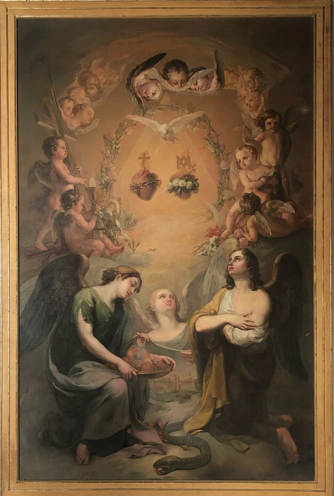
Il Cuore Immacolato di Maria
Padre celeste, per mezzo del Cuore Immacolato di Maria Ti offro Gesù, il Tuo Figlio prediletto, e me stesso in Lui, con Lui e per mezzo di Lui, secondo tutte le Sue intenzioni e a nome di tutte le creature. Amen. (Preghiera di offerta)16
La vita ha tanto valore quanti atti d'amore di Dio essa compie. Quando dunque l'anima affida i propri atti all'Immacolata, li offre a Dio come propri. In questo modo i nostri atti d'amore verso Dio ricevono tutta la loro bellezza. San Massimiliano M. Kolbe
15 Imprimatur: Friburgi Helv. 28.12.1959, L. Weber, vic. gen.
16 Ibid.
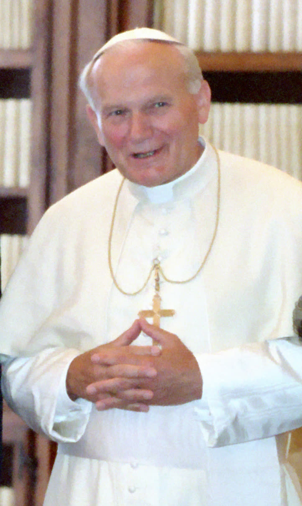
Papa San Giovanni Paolo II
Sulle tracce dell'Apocalisse
Poche settimane prima della sua elezione a papa, il papa san Giovanni Paolo II pronunciò le parole profetiche:
Ci troviamo davanti alla più grande battaglia che l'umanità abbia mai visto. Non credo che la comunità dei cristiani l'abbia compresa pienamente. Oggi ci troviamo davanti alla battaglia finale tra la Chiesa e l'anti-Chiesa, tra il Vangelo e l'anti-Vangelo.17
17 Vi sarà una Chiesa falsificata. Una Chiesa sarà la Chiesa di Cristo, e il falso profeta ne costruirà un'altra. La Chiesa falsa sarà mondana, ecumenica e globale. Si tratterà di un vago raggruppamento di Chiese e religioni. […] La Chiesa falsa sarà svuotata di ogni contenuto divino; sarà il corpo mistico dell'Anticristo. (Arcivescovo Fulton Sheen, Der Kommunismus und das Gewissen der westlichen Welt, Berlin 1950)
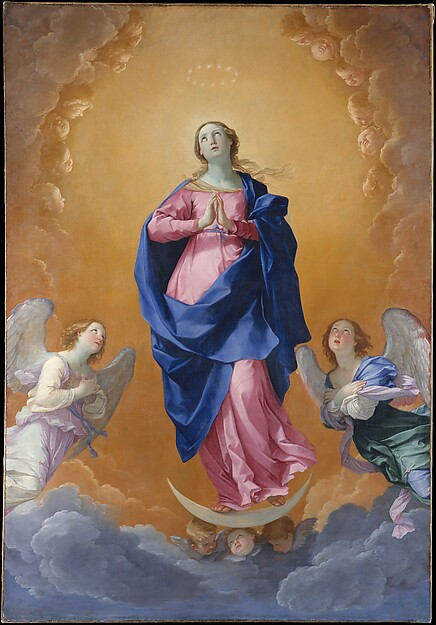
La donna vestita di sole
La Chiesa del Redentore e il drago
In questa vita terrena ci troviamo in una lotta spirituale, che da una parte è seguita con la massima attenzione da Dio e da innumerevoli angeli e santi del cielo, e dall'altra da Satana e dalla sua intera schiera. Con la sola decisiva differenza che il cielo fa di tutto per conquistarci all'amore eterno, mentre l'inferno vuole precipitarci nell'odio eterno.18
18 Poiché questo nemico è uno spirito puro e incorporeo, che nessuna attività stanca, è così zelante nella persecuzione che la inizia fin dal primo istante dell'esistenza di un uomo nel grembo materno e non abbandona la lotta finché l'anima non si separa dal corpo. […] A tal fine si serve dei nostri sensi, delle facoltà dell'anima, delle inclinazioni e delle passioni. «Figlia mia, è impossibile descrivere l'invidia, la malizia e l'inganno di Lucifero e dei suoi demoni contro gli uomini. […] Come il cielo si rallegra di ogni opera buona, così nell'inferno i cattivi spiriti godono quando gli uomini peccano.» (Leben der Jungfrau und Gottesmutter Maria, vol. 4, p. 192, pp. 209–210)
Nell'Apocalisse san Giovanni descrive la lotta di Satana19 contro il popolo di Dio come una lotta tra un drago rosso fuoco (Ap 12,3), al quale viene in aiuto una bestia che sale dal mare (Ap 13,1) con dieci corna e sette teste, e una seconda bestia (Ap 13,11), che sale dalla terra, ha due corna come un agnello, ma parla come un drago. Essi combattono contro il popolo di Dio, che viene descritto nel modo seguente:
Un segno grandioso apparve nel cielo: una donna vestita di sole, con la luna sotto i suoi piedi e, sul capo, una corona di dodici stelle. Ap 12,1
La Chiesa, il popolo di Dio, è simboleggiata dalla santa Vergine Maria, Madre della Chiesa. Qui viene proseguito il filo rosso che parte dall'inizio della Bibbia:
Io porrò inimicizia fra te e la donna, fra la tua stirpe e la sua stirpe. Gen 3,15
19 Quando gli angeli espressero la loro volontà, ciò valse per sempre. Con il loro intelletto videro tutte le conseguenze e vi acconsentirono. La tradizione ritiene che l'orgoglio di Lucifero [Satana] e dei suoi seguaci fosse così forte che preferirono l'io – «Io sono io», disse Lucifero –, e allora, nel mezzo di questa prova, uno degli angeli più umili, san Michele, appartenente al penultimo coro, disse: «Qui ut Deus?» – «Chi è come Dio?» E con questa parola umile san Michele gettò Lucifero e i suoi seguaci dal cielo nell'abisso. (Christus vinCit, Bischof Athanasius Schneider im Gespräch mit Diane Montagna, Kißlegg, 2020, p. 416)
Questa lotta tra Satana e Maria viene combattuta sulla terra per procura dalla Chiesa e dalle potenze ostili a Dio e alla Chiesa: il drago rosso sotto forma del comunismo marxista e le due bestie, la massoneria e la massoneria ecclesiastica infiltrata nella Chiesa.20 Quest'ultima è la bestia con due corna, simile a un agnello, che si è spinta fino ai vertici della Chiesa.21 Il suo obiettivo principale è la distruzione della Chiesa romano-cattolica mediante un falso ecumenismo, con lo scopo di fondare una Chiesa universale formata dall'unione di tutte le confessioni cristiane.22
20 San Massimiliano M. Kolbe fu uno dei più decisi oppositori della massoneria e dello zionismo internazionale, perché ne aveva riconosciuto chiaramente la tattica diabolica nella lotta contro la Chiesa cattolica: Il primo, il più grande e il più potente nemico della Chiesa è la massoneria. (Maria – Der Eckstein, di Dr. med. Hans Salmen, Lauerz 1995, p. 51.)
21 Già nel 1846 la Madre di Dio a La Salette pianse per la situazione all'interno della Chiesa e per la grande apostasia dalla fede, di cui parlò ai due pastorelli: I capi, le guide del popolo di Dio, hanno trascurato la preghiera e la penitenza, e il demonio ha ottenebrato la loro intelligenza. […] Il numero dei sacerdoti e dei religiosi che si separeranno dalla vera religione sarà grande; tra queste persone vi saranno anche dei vescovi. […] La Chiesa attraverserà una terribile crisi. Poiché la santa fede in Dio è caduta nell'oblio, ciascuno vuole guidare sé stesso e stare al di sopra dei suoi simili. (Ibid., pp. 150–153)
22 Anche la beata Anna Katharina Emmerick (1774–1824) vide questo deplorevole stato: Costruiscono una strana chiesa, una vera comunità di empi! Il recinto delle pecore brucia da tutte le parti! E i pastori! Vidi una folla immensa di uomini occupati ad abbattere la basilica di San Pietro. Ma vidi anche altri che la ricostruivano. […] Vi erano soprattutto molti appartenenti a sette e apostati. Persone che portavano grembiuli bianchi con tasche, bordati di nastro azzurro, e avevano cazzuole da muratore infilate nella cintura, demolivano come secondo prescrizione e regola. […] Con mio grande orrore, tra questi massoni c'erano anche sacerdoti cattolici. (Ibid., p. 28)
Il fine principale è l'eliminazione del Santo Sacrificio della Messa, l'abolizione del Santissimo Sacramento dell'altare, nel quale Gesù Cristo è presente nascosto e velato con la divinità e l'umanità.23
L'Eucaristia è il parafulmine divino, che allontana i fulmini della giustizia divina. Come una madre tenera e amorevole stringe il suo bambino al petto, gli avvolge le braccia intorno e lo ripara con il suo corpo per salvarlo dall'ira di un padre adirato, così Gesù moltiplica la Sua presenza ovunque. Egli copre il mondo e lo abbraccia con la Sua presenza misericordiosa. San Pietro Giuliano Eymard
23 Cfr. Der letzte Kampf zwischen Licht und Finsternis di Paul Josef Jakobius, Altötting 2010.
Il marchio della bestia
Essa fa sì che tutti, piccoli e grandi, ricevano un marchio sulla mano destra o sulla fronte, e che nessuno possa comprare o vendere senza avere tale marchio, cioè il nome della bestia o il numero del suo nome. […] Il suo numero è seicentosessantasei (666). Chiunque adora la bestia e la sua statua, e ne riceve il marchio sulla fronte o sulla mano, anch'egli berrà il vino dell'ira di Dio. […] Qui sta la perseveranza dei santi, che custodiscono i comandamenti di Dio e la fede in Gesù. Ap 13,16-18; 14,9-12
Già più di duemila anni fa san Giovanni l'apostolo mise in guardia contro una sorveglianza totale dell'umanità da parte della bestia e del suo falso profeta, il cui nome è il numero biblico 666, quello che si conosce anche come Anticristo. Chi con cuore sincero, alla luce dello Spirito Santo, si chiede il significato di questo passo profetico, può certamente scoprire la verità riguardo agli eventi mondiali. Infatti il piano per l'instaurazione di un nuovo ordine mondiale (novus ordo saeculorum)24, che è segnato da leggi e ideologie anticristiane, unito a una crescente sorveglianza dell'umanità e alla limitazione dei suoi diritti fondamentali, si rivela sempre più chiaramente.
Quando ci si chiede perché il male abbia potuto prendere il sopravvento in modo così minaccioso, dobbiamo solo gettare uno sguardo alla storia della salvezza. Non appena l'uomo si separa da Dio e si impiglia nel grave peccato, abbandona la zona di protezione di Dio garantita dai comandamenti e si consegna alle trame del male e così alla propria rovina. Già nell'Antico Testamento Dio si lamenta dolorosamente per bocca del profeta:
Se avessi prestato attenzione ai miei comandi, il tuo benessere sarebbe come un fiume, la tua giustizia come le onde del mare. Is 48,18
24 Il termine novus ordo saeculorum è il codice ideologico e programmatico del governo di un mondo unico. La massoneria formula come suo fine essenziale e ultimo l'instaurazione di un novus ordo saeculorum, un nuovo ordine sociale e politico a livello globale, per imporre agli uomini in modo dittatoriale l'indifferenza religiosa e il sincretismo (mescolanza di diverse religioni), la perversione morale e una politica radicalmente anticristiana e soprattutto anticattolica. Un tale nuovo ordine sociale mira in ultima analisi alla venerazione e all'adorazione dell'uomo, la forma più radicale di ateismo. (Christus vinCit, p. 285)
La maggior parte degli uomini nell'Occidente un tempo cristiano è diventata cieca per la vera fede negli ultimi decenni di benessere e si è creata degli dèi propri: beni, denaro, piacere, il proprio io egoista25 e la sconfinata serie dei vizi e dei peccati ad essi collegati.26 Dopo la sua conversione, la celebre dentista Gloria Polo dichiarò: Quando pecchiamo, facciamo la spesa al supermercato del diavolo e dobbiamo pagare questa merce a caro prezzo.
25 San Tommaso d'Aquino spiega nella sua Summa theologiae, I-II, q. 77, a. 4: L'amore disordinato di sé è l'origine di ogni peccato. E per santa Caterina da Siena l'amore di sé è la sorgente di ogni male e la rovina di ogni bene. La lotta contro questo vizio fondamentale attraversa tutti i suoi scritti. L'amore di sé regna dove non si praticano l'amore di Dio e l'amore del prossimo e l'io sta al centro (egoismo, egocentrismo).
26 Sulle deviazioni del nostro tempo scrive Gabriele Kuby: Esse si rivolgono contro la natura dell'uomo e contro la famiglia. I bambini vengono impediti con la contraccezione; i bambini vengono uccisi prima della nascita, se non sono voluti; i bambini vengono prodotti in laboratorio, se sono voluti; i bambini vengono derubati della loro discendenza; i bambini vengono congelati come embrioni e consumati dalla ricerca; i bambini vengono portati in grembi affittati; i bambini vengono allevati da coppie omosessuali che li acquistano; i bambini vengono consegnati fin dall'età dell'allattamento a un'assistenza collettiva estranea; i bambini vengono sessualizzati già alla scuola materna; i bambini vengono consegnati alla pornografia; i bambini diventano vittime del divorzio; i bambini vengono privati della loro libertà. Una società così indebolita non ha futuro, a meno che non torni a Dio. (Kirche heute Nr. 11, 2020, pp. 10–12)
Ma le conseguenze del peccato (la sofferenza) colpiscono anche gli innocenti, i quali, come Giobbe, i fanciulli innocenti di Betlemme e molti altri, sono in modo speciale inseriti nell'opera della redenzione insieme con l'Agnello innocente di Dio.
Se ci domandiamo ora che cosa possiamo fare, in questo tempo estremamente difficile per noi e a nome di tutta l'umanità, la Sacra Scrittura ci consiglia ciò che piace di più a Dio:
Conversione, preghiera, penitenza! La penitenza consiste nell'accettare tutte le piccole croci quotidiane e nel compiere anche il lavoro in spirito di penitenza. Parole della Madre di Dio a Montichiari, 1947
Se il mio popolo, sul quale è stato invocato il mio nome, si umilierà, pregherà e ricercherà il mio volto, e si convertirà dalle sue vie malvagie, ascolterò dal cielo e perdonerò il suo peccato e risanerò la sua terra. 2 Cr 7,14
Inoltre ci si chiede: che cosa accade ai credenti che non si sottomettono alle leggi anticristiane e dittatoriali e per questo vengono sanzionati nella vita sociale?
La Bibbia dà la risposta: Àlzati e misura il tempio di Dio e l'altare e il numero di quelli che in esso stanno adorando. Ma l'atrio, che è fuori dal tempio, lascialo da parte e non lo misurare, perché è stato dato in balìa dei pagani, i quali calpesteranno la città santa per quarantadue mesi. (Ap 11,1-2)
Che il tempio venga misurato e gli adoratori contati significa che nella persecuzione della fine dei tempi la comunità cristiana, il piccolo gregge, il resto della discendenza di Maria, sarà sotto la particolare protezione di Dio. (cfr. Ap 12,17)
Molti segni fanno anche pensare che in questo tempo accadranno prodigi simili a quelli che gli Israeliti sperimentarono nell'uscita dall'Egitto.27
Gioiscano quanti in te si rifugiano, esultino senza fine. Proteggili, perché in te si allietino quanti amano il tuo nome. Sal 5,12
27 Cfr. Der letzte Kampf zwischen Licht und Finsternis.
Quando sei malato e soffri dolori, quando sei tormentato da pensieri peccaminosi e dubbi, allora pronuncia con forza il nome di Gesù oppure pensalo. Nei pericoli, nello spavento, in casa o per strada, ovunque tu sia, pronuncia il nome di Gesù, il nome del nostro Redentore, non soltanto con la bocca, ma anche con il cuore e con venerazione, perché questo nome dà forza. San Lorenzo Giustiniani
Nell'esercito di Nostra Signora
La donna vestita di sole, come è descritta nell'Apocalisse, avanza come archetipo e madre della Chiesa alla testa dell'esercito contro le potenze nemiche. Con amore materno protegge i suoi figli, che si trovano ancora nel tempo di prova di questa vita terrena. Ma non dobbiamo dimenticare che Maria, in questa grande battaglia, nella quale è in gioco la salvezza di tante anime immortali, ha bisogno anche della nostra collaborazione.
Nel settembre 1961 il postulatore del processo di beatificazione di Giacinta e Francesco portò un messaggio importante da suor Lucia, che egli visitò con il permesso del Santo Padre nel Carmelo di Coimbra. Suor Lucia era molto addolorata e parlò della profonda tristezza della Madre di Dio, perché così pochi si curano del suo messaggio del 1917. Anche i fedeli osservano troppo poco le sue indicazioni, e i malvagi proseguono sulla via della rovina. Padre, dica a tutti ciò che la Madre di Dio mi ha detto spesso: molte nazioni scompariranno dalla faccia della terra. La Russia sarà il flagello che Dio sceglie per punire gli uomini, se noi con la nostra preghiera e con i sacramenti non otterremo la grazia della conversione.28 Inoltre la Madre di Dio spiegò a suor Lucia che gli ultimi mezzi di aiuto dati al mondo sono il Rosario29 e la venerazione del suo Cuore Immacolato. In queste parole della Madre di Dio risplende di nuovo per noi il messaggio centrale di Fatima: Non si deve più offendere il Signore nostro Dio, che è già stato tanto offeso. (13 ottobre 1917)
Il Rosario fa rifiorire la virtù e le opere di pietà. Attraverso di esso, le anime ricevono la pienezza della misericordia divina. Convertirà i cuori, e cominceranno a disprezzare le cose terrene, ad amare le cose celesti e a fare rapidi progressi. Molte anime saranno salvate attraverso il Rosario. Dalle promesse della Madre di Dio al beato Alano della Rupe
È il Mio desiderio più ardente che si diffonda la venerazione e la devozione al Cuore Immacolato di Maria, perché questo Cuore è la calamita che attira le anime a Me, il focolare che irradia i raggi della Mia luce e del Mio amore su tutta la terra, e la fonte inesauribile che fa scendere sulla terra le acque vive della Mia misericordia. Parole di nostro Signore Gesù Cristo a suor Lucia
28 Sappi, figlia mia, che tutti i sacramenti affidati alla santa Chiesa, in particolare la Santa Eucaristia, sono armi potenti per sventare gli assalti infernali e gettare nel terrore tutti i diavoli. Proprio per questo il mio santissimo Figlio li ha istituiti. Ma se oggi le anime non sperimentano più questa forza ed efficacia, la ragione sta nel fatto che manca loro il giusto rispetto e la giusta stima con cui dovrebbero trattarli e riceverli. Sta' certa: le anime che ricevono i santi sacramenti con devozione e rispetto sono temibili per gli spiriti infernali. Possiedono un grande e potente dominio su Satana. (Leben der Jungfrau und Gottesmutter Maria, vol. 4, p. 351)
29 Quando il cardinale Kracziwitz nel 1981 si recò con alcuni sacerdoti e fedeli in udienza da Papa San Giovanni Paolo II, il Santo Padre tirò fuori il rosario e disse: «Questo è l'esorcismo che anche i laici possono pregare.» I presenti furono sorpresi – allora il Papa disse: «Perché non vi siano dubbi: io conferisco al Rosario il potere dell'esorcismo!»
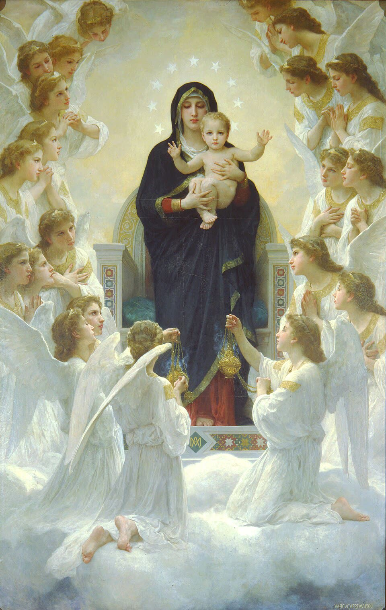
Maria, regina dei santi Angeli
Alla Regina dei santi Angeli
Augusta Regina del cielo e Sovrana degli Angeli, Tu hai ricevuto da Dio fin dal principio il potere e la missione di schiacciare la testa di satana. Per questo Ti preghiamo umilmente: mandaci in aiuto le legioni celesti, perché sotto la Tua guida perseguitino i demoni, li combattano dappertutto, respingano i loro attacchi temerari e li ricaccino nell'abisso. «Chi è come Dio?» O buona e tenera Madre, Tu sarai sempre il nostro amore e la nostra speranza! O Madre di Dio, mandaci i santi Angeli, perché ci difendano e tengano lontano da noi il crudele nemico. Santi Angeli e Arcangeli, difendeteci e proteggeteci! Amen.30
30 Il 13 gennaio 1864 il fondatore della Congregazione delle Serve di Maria, padre Cestac (1801–1868), nel santuario di Nostra Signora del Rifugio ad Anglet (Pirenei), fu scosso all'improvviso come da un raggio di chiarezza divina. Vide i demoni diffusi in tutto il mondo e dappertutto intenti a causare danni indicibili. Nello stesso tempo ebbe una visione della Beatissima Vergine Maria, che gli disse che i demoni erano davvero scatenati in tutto il mondo. Per questo era giunta l'ora di invocarla come Regina degli Angeli e di pregarla di inviare legioni di santi Angeli per combattere le potenze degli inferi. «Madre mia», disse il sacerdote, «Voi siete così buona, non potreste mandarli senza che lo si chieda?» – «No», rispose la Beatissima Vergine, «la preghiera è una condizione posta da Dio, anche quando si vogliono ottenere grazie.» – «Se è così, Madre mia, ci insegnereste allora come si deve pregare?» Allora ricevette dalla Beatissima Vergine la preghiera «Augusta Regina» e, dopo l'approvazione del vescovo, la diffuse in tutto il mondo. Questa preghiera, accompagnata da grazie straordinarie, fu raccomandata da papa Pio IX e arricchita da Leone XIII e da Pio X con la concessione di un'indulgenza plenaria.
Se ti accorgi che questa vita terrena è più un andare alla deriva tra onde, vento e tempesta che un camminare su terra ferma: non distogliere gli occhi dalla luce di questa stella, per non sprofondare nelle tempeste.
Quando i venti impetuosi delle tentazioni soffiano, quando sei sbattuto tra gli scogli delle tribolazioni, guarda alla stella, invoca Maria! Quando ti sollevano le onde dell'orgoglio, dell'ambizione, della calunnia, dell'invidia: guarda alla stella, invoca Maria!
Quando ira, avidità o la concupiscenza della carne scuotono la tua anima: guarda a Maria!
Quando il peso dei peccati ti opprime e la vergogna della coscienza ti umilia, quando la severità del giudizio ti spaventa, quando rischi di essere inghiottito da una tristezza abissale e dalla disperazione, pensa a Maria!
Se ella ti tiene, non cadrai. Se ti protegge, non temere nulla. Se ti guida, non ti stancherai. Se ti è propizia, arriverai alla meta e sperimenterai come è vero ciò che si dice: «E il nome della Vergine era Maria – Stella del mare».
San Bernardo di Chiaravalle

L'Agnello sul monte Sion
Il regno dell'Agnello
E vidi: ecco l'Agnello in piedi sul monte Sion, e insieme a lui centoquarantaquattromila persone, che recavano scritto sulla fronte il suo nome e il nome del Padre suo. Ap 14,1
Il numero dei 144.000 simboleggia la totalità di coloro che sono salvati e indica quei cristiani che seguono l'Agnello dovunque vada, cioè che vivono nella sequela di Cristo. Il 12 è il numero delle tribù d'Israele, il 1000 il numero della pienezza. Sulla loro fronte Giovanni vide scritto il nome del Padre suo, là dove i servi della bestia portavano il marchio della bestia. Il nome dell'Agnello, Gesù, qui contemplato, il cui numero è 888, sta in contrasto con gli adoratori della bestia, che avevano il numero 666 sulla fronte. Come nome del Padre, Giovanni avrà visto sulla loro fronte il nome Jahwe (Colui che è). I nomi sulla fronte sono simboli della dedizione dei cristiani a Dio e a Cristo. Il sigillo impresso è dunque l'atto del battesimo, accolto nella fede e perciò capace di plasmare il pensiero (la fronte). Qui si allude perciò anche al battesimo cristiano, che avviene nel nome del Padre e del Figlio e dello Spirito Santo. (Mt 28,19)
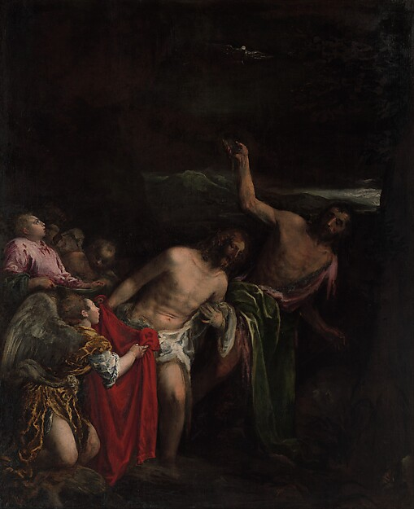
Il battesimo di Cristo nel Giordano
Sono coloro che non si sono contaminati con donne; sono vergini, infatti, e seguono l'Agnello dovunque vada. Questi sono stati redenti tra gli uomini come primizie per Dio e per l'Agnello. Ap 14,4
Il termine «meretrice» designa nell'Apocalisse la Roma idolatra. Il contrario, «vergine», designa dunque il popolo cristiano fedele, che un giorno si unirà a Cristo in matrimonio. «Vergine» ha qui un significato spirituale: si intendono tutti i cristiani, sposati o no, che come primizia, per qualità e non legata al tempo, vivono nella fedeltà alla loro futura «unione con Dio», senza commettere «fornicazione» con gli dèi pagani mediante sguardi laterali o compromessi (cfr. Dt 5,6). Essi non civettano né con la falsa Chiesa ecumenica, né si lasciano influenzare da correnti esoteriche o da altre religioni.31
31 Cfr. Die Offenbarung des Johannes di Dr. Ludwig Neidhart, Augsburg 2019.
Se la Sacra Scrittura ci promette: Il nostro aiuto è nel nome del Signore: egli ha fatto cielo e terra. (Sal 124) possiamo confidare che Dio in questa lotta spirituale ci concederà la grazia di rimanere fedeli a Lui e di confessare con coraggio la vera fede cattolica. Quanto più il nome di Dio viene bestemmiato e disonorato, tanto più vogliamo glorificare con la nostra vita cristiana il Santissimo Nome del Signore e invocarLo con fiducia.
E quando vediamo o sentiamo maledire o fare del male o bestemmiare Dio, allora benediciamo e facciamo del bene e lodiamo Dio, che è benedetto nei secoli. San Francesco
La Freccia d'oro
Sia sempre lodato, benedetto, amato, adorato e glorificato l'altissimo, adorabilissimo e ineffabile Nome di Dio, in cielo, sulla terra e sotto la terra, da tutte le creature uscite dalle mani di Dio, e per il Sacratissimo Cuore di Gesù nel Santissimo Sacramento dell'altare. Amen.32
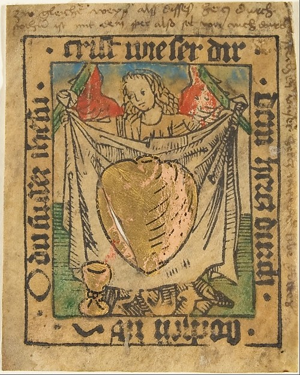
La venerazione del Sacratissimo Cuore di Gesù
Preghiera indulgenziata al Santissimo Nome di Gesù
Buon Gesù, secondo la Tua grande misericordia abbi pietà di me! Gesù clemente, per il Preziosissimo Sangue che hai versato per i peccatori, Ti prego: lavami da tutte le mie iniquità e volgi benigno lo sguardo su di me, povero uomo indegno! Invoco il Tuo Santissimo Nome. Salvami dunque, caro Gesù, per amore del Tuo Santissimo Nome. Amen.
32 Il divino Salvatore disse una volta alla devota suor Maria di San Pietro: «La bestemmia è una freccia avvelenata che ferisce il Mio Cuore. Voglio darti una Freccia d'oro, che ripari il disonore e la bestemmia del Santissimo Nome di Dio.» Dopo aver ricevuto questa preghiera, suor Maria di San Pietro ebbe una visione divina, nella quale vide il Sacratissimo Cuore di Gesù teneramente ferito da questa Freccia d'oro. Da Lui scaturirono allora torrenti di grazie per la conversione dei peccatori. Uso della preghiera: si recita tre volte in onore della Santissima Trinità; indulgenza parziale, 15 aprile 1881, tratto da: Handbuch der Erzbruderschaft vom Heiligsten Antlitz Unseres Herrn nebst dem kleinen Offizium vom Heiligsten Namen Gottes di Abbé Désiré Janvier, tradotto dal francese, Tours 1887, p. 186.
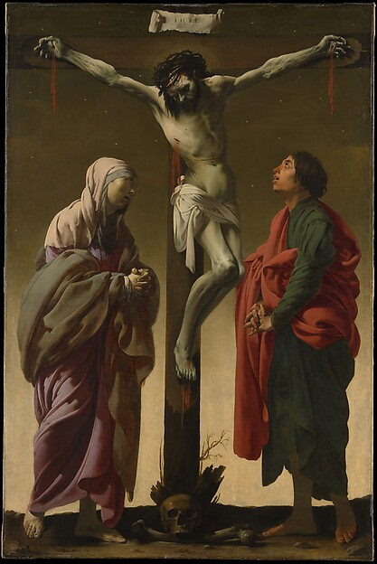
Crocifissione di Cristo
La passione del corpo mistico di Gesù
Pregate per la Chiesa, per il mondo, per tutti. Tutta la cristianità è accolta nella preghiera di Gesù. Se pregate soltanto per voi stessi, significa che non siete altruisti. Ma se pregate per la Chiesa, siete voi stessi la Chiesa. Nella Chiesa si trova Cristo, unito con essa, come pure con il Padre e lo Spirito Santo. La Santissima Trinità e la Chiesa sono una cosa sola. San Geronda Porfirio
La Chiesa edificata su Pietro è l'unica che Gesù ha fondato. E proprio per questo viene criticata, perseguitata e attaccata. Su questo fatto riflette Blaise Pascal nei suoi Pensieri: Gesù sarà in agonia fino alla fine del mondo. Non bisogna dormire in questo tempo.
L'attuale apostasia dalla fede è soltanto la punta dell'iceberg. La grande apostasia verrà quando il falso ecumenismo massonico riuscirà a separare i fedeli dal magistero della Chiesa cattolica. Allora la porta sarà spalancata alla comparsa dell'uomo con il numero 666, poiché quasi tutti seguiranno il falso Cristo e la falsa Chiesa.
Il corpo mistico di Gesù subirà la stessa sorte del Signore stesso: persecuzione, disprezzo, crocifissione, morte, ma anche risurrezione. La Chiesa percorre la stessa via. Sarà la grande purificazione del mondo, dell'umanità e della Chiesa, ma sarà al tempo stesso anche la nuova Pentecoste.33
Nel suo nuovo libro Christus vincit il vescovo ausiliare Athanasius Schneider scrive:
33 L'ultimo combattimento tra la luce e le tenebre.
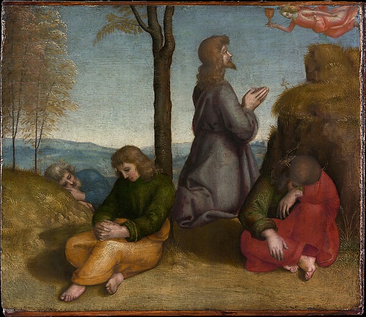
Cristo sul Monte degli Ulivi, confortato da un angelo
Dalle circostanze della Passione di Cristo possiamo comprendere il senso spirituale, anzi mistico, delle sofferenze della Sposa di Cristo, la Chiesa. L'attuale crisi all'interno della Chiesa è la forma più profonda della sofferenza, perché la Chiesa oggi non è perseguitata, flagellata, spogliata delle sue vesti e schernita dai suoi nemici, ma in larga misura dai suoi pastori, da molti che sono successori degli apostoli.34 […]
Quando Cristo soffriva nel Getsemani, fu confortato da un angelo. Questo è un profondo mistero: Dio, nella Sua natura umana, volle essere consolato e rafforzato da una creatura. In questa gigantesca crisi spirituale che viviamo all'interno della Chiesa, Cristo viene consolato e rafforzato da anime che restano fedeli alla fede cattolica non adulterata, da anime che non abbandonano il Cristo sofferente, la Chiesa madre sofferente, e non fuggono.
La consolazione e la forza che Cristo ricevette dall'angelo nel Getsemani contenevano già tutti gli atti di riparazione e di soddisfazione di tutte le anime credenti nella storia della Chiesa. Tante anime soffrono oggi, soprattutto negli ultimi cinquant'anni, a causa della mostruosa crisi della Chiesa.
34 Le mura della nostra Chiesa grondano del mistero del tradimento … Viviamo il mistero dell'iniquità, del tradimento – il mistero di Giuda … Ovunque si è insinuato il male di un attivismo ossessionato dall'efficienza … Cerchiamo di imitare l'organizzazione di grandi imprese e dimentichiamo che solo la preghiera è il sangue che scorre nelle vene della Chiesa … Chi non prega più ha già commesso tradimento. È già pronto a tutti i compromessi con il mondo: in cammino sulle orme di Giuda. (Cardinale Robert Sarah, Herr, bleibe bei uns, Kißlegg 2019)
Più preziose sono le sofferenze nascoste dei piccoli, di quelle persone che l'establishment ecclesiastico liberale, mondano e miscredente ha spinto ai margini della Chiesa. Le loro sofferenze sono preziose, perché consolano e rafforzano Cristo, che nella nostra attuale crisi nella Chiesa soffre in modo mistico. […]
Bambini, giovani, famiglie, membri di ordini religiosi, sacerdoti, vescovi e cardinali, se restano fedeli a Cristo, se custodiscono la fede cattolica non adulterata, se vivono una vita di castità e di umiltà, allora sono i puri e i piccoli nella Chiesa. Le parole seguenti di san Paolo, riferite all'anima del singolo, si riferiscono esattamente alla Chiesa, e soprattutto alla Chiesa dei nostri giorni: Se davvero prendiamo parte alle sue sofferenze per partecipare anche alla sua gloria. (Rm 8,17)35
Il vostro ardente desiderio deve essere questo: che il mondo sia santificato e che tutti gli uomini appartengano a Cristo. Allora entrerete nella Chiesa, vivrete nella gioia del paradiso, in Dio, perché la pienezza della divinità vive nella Chiesa. San Geronda Porfirio
35 Christus vincit, pp. 440–443.
Angelo custode con bambini
Nella scuola dei santi Angeli
Ecco, io mando un angelo davanti a te per custodirti sul cammino e per farti entrare nel luogo che ho preparato. Abbi rispetto della sua presenza, da' ascolto alla sua voce e non ribellarti a lui; egli infatti non perdonerebbe la vostra trasgressione, perché il mio nome è in lui.36 Es 23,20-22
36 Il mio angelo custode è stato dato solo a me, ed è un essere spirituale molto potente, che è sempre alla presenza di Dio e che, durante la prova degli angeli, rimase fedele a Dio, mentre alcuni dei suoi fratelli si allontanarono da Dio insieme a Lucifero. Il mio angelo custode e ogni angelo custode riconobbero Cristo nello spirito dell'umiltà e del servizio. Perciò ogni angelo desidera ardentemente diventare un giorno un angelo custode umile e servizievole di un essere umano. Ogni angelo sogna di inchinarsi. La sua «carriera dei sogni» consiste nell'essere piccolo, nello scendere e non nel salire, come gli uomini desiderano di solito nei loro sogni di carriera. (Christus vinCit, pp. 416, 417)
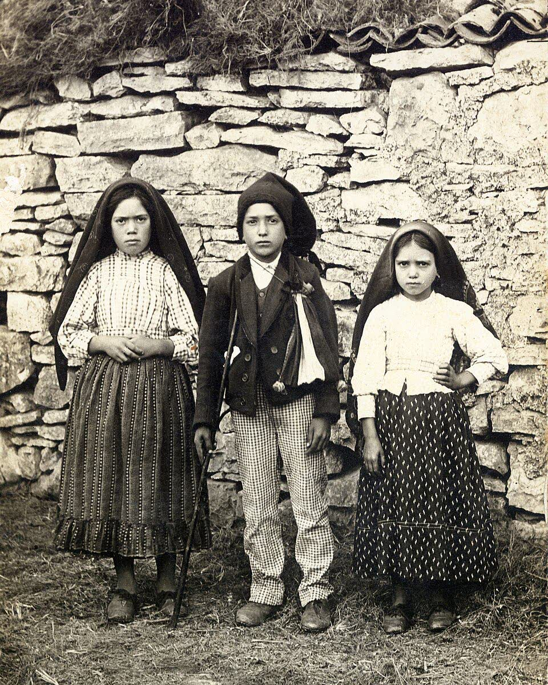
I tre pastorelli di Fatima: Lucia, Francesco e Giacinta
Che cosa fate?
Prima che Maria apparisse a Fatima nel 1917, i tre veggenti Lucia, Francesco e Giacinta furono preparati a questa grande grazia nel 1916 da una triplice visita di un angelo del Signore. Alla sua seconda apparizione l'angelo rivolse ai bambini, immersi nel gioco, le parole pregnanti:
«Che cosa fate?» Questo «Che cosa fate?» sulla bocca dell'angelo è straordinariamente profondo e contiene per ciascuno di noi un messaggio potente e una domanda decisiva:
Che cosa facciamo del nostro talento della vita? Lo sprechiamo nella sabbiera della caducità, oppure suoniamo davanti a Dio il vero canto dell'amore, come Maria, la Madre di Dio, di cui si dice:
Ero la sua delizia ogni giorno: giocavo davanti a lui in ogni istante … Pr 8,30
Questa è una parola che si stende come un arcobaleno alto sul cielo dei nostri concetti, e solo uno spirito che sa volare alto e lontano la comprenderà chiaramente. Con «giocare» possiamo intendere noi uomini, in senso figurato, il rallegrare Dio, il diletto di Dio per Maria già per il suo essere davanti a Dio. Lei è come un cristallo mille volte luminoso, che su ogni superficie di taglio mostra una prospettiva diversa, la quale fa esplodere in giubilo e adorazione di Dio sia gli angeli sia gli uomini.
E se vogliamo riportare questa parola sulla terra e comprenderla correttamente, possiamo dire che ciò che per Maria, la senza peccato, fu un «giocare», per noi uomini richiede un vero sforzo e dovrebbe tradursi così: «È nostra gioia essere ogni giorno davanti a Dio nell'adorazione e nel fervore instancabile per tutto ciò che è bene, voluto da Dio e conduce a Dio!» Se vogliamo pensare sempre solo a Dio, rallegrarLo sempre con una piccola prova d'amore – nella forma di un sacrificio portato con gioia, nella forma di un nuovo dono, e ritornare sempre a Lui come la palla nella mano del bambino –, allora anche la nostra vita è un essere amante davanti a Dio, un giocare del bambino per mano alla Madre Maria. Che cos'è dunque il nostro agire qui sulla piccola terra misurato sull'eternità: non sembra forse un giocare?
Ma Dio prende molto sul serio questo nostro «giocare». Ci ha dato un angelo a ogni passo, perché il nostro piede non inciampi, ed egli «gioca» davanti a Dio, suona il canto della nostra vita, del nostro amore per Dio; per noi canta il Gloria, il Credo e il Sanctus, l'Agnus Dei e il Domine non sum dignus; suona sull'arpa il nostro giubilo. Ogni nostra indole è una corda. Quando vibra per Dio, il nostro angelo trasforma il nostro atto di volontà in un suono e lo presenta come un canto al nostro Signore: il nostro amore, il nostro sforzo, la nostra obbedienza, la nostra disponibilità, il nostro sì, il nostro silenzio e il nostro perdono.
E ora torniamo ancora una volta alla domanda dell'angelo «Che cosa fate?» e al suo compito molto concreto affidato a ciascuno di noi:
Pregate, pregate molto! I Cuori di Gesù e di Maria hanno su di voi disegni di misericordia. Offrite incessantemente all'Altissimo preghiere e sacrifici.
Fate di tutto ciò che potete un sacrificio per riparare i peccati con cui Egli è offeso e per implorare la conversione dei peccatori. […] Soprattutto accettate la sofferenza e sopportate con sottomissione ciò che il Signore vi manderà.
Ti loderò, Signore, mio Dio, con tutto il cuore e darò gloria al tuo nome per sempre. Sal 86,12
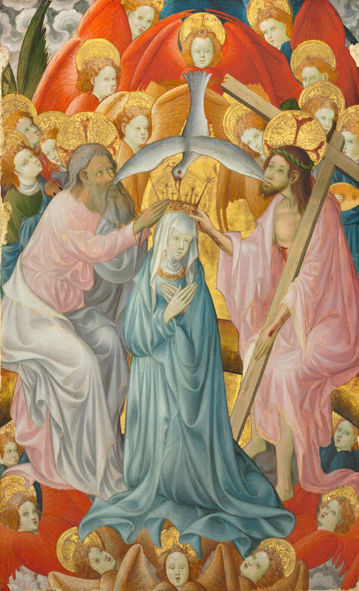
Cori dei santi Angeli
Preghiera di lode dei santi Angeli alla Santissima Trinità
Salve a Te, Sovrano eterno, Dio vivente, Colui che è da sempre, giudice tremendo e giusto, Padre sempre buono e misericordioso! A Te sia reso di nuovo e in ogni tempo adorazione, lode, onore e gloria per mezzo della Tua figlia rivestita di sole, nostra mirabile Madre!
Salve a Te, Dio-uomo immolato, Agnello sanguinante, Re della pace, Albero della vita, Tu nostro Capo, porta del Cuore del Padre, eternamente generato dal Vivente, regnante in eterno con Colui che è! A Te sia reso di nuovo e in ogni tempo potenza, gloria, grandezza, adorazione, riparazione e lode per mezzo della Tua immacolata Genitrice, nostra mirabile Madre!
Salve a Te, Spirito dell'Eterno, che da sempre effondi santità, operante da sempre in Dio! Tu fiume di fuoco dal Padre al Figlio, Tu tempesta fragorosa che soffi forza, luce e ardore nelle membra del Corpo eterno. Tu eterno incendio d'amore, Spirito di Dio che dai forma ai viventi, Tu rosso torrente di fuoco dal Sempre-Vivente ai mortali! A Te sia reso di nuovo e in ogni tempo potenza, gloria e bellezza per mezzo della Tua Sposa coronata di stelle, nostra mirabile Madre!37
37 Questa mirabile preghiera di lode fu recitata da una schiera incalcolabile di santi Angeli durante l'ultima apparizione della Madre di Dio a Marienfried, il 25.6.1946. Imprimatur: Augusta, 27.10.1966. «È un'eco di quel canto dell'Apocalisse che la grande moltitudine, che nessuno può contare, innalza con gli Angeli e gli Anziani, prostrata davanti al trono.» (Da un'omelia festiva del vescovo dott. Rudolf Graber a Marienfried)
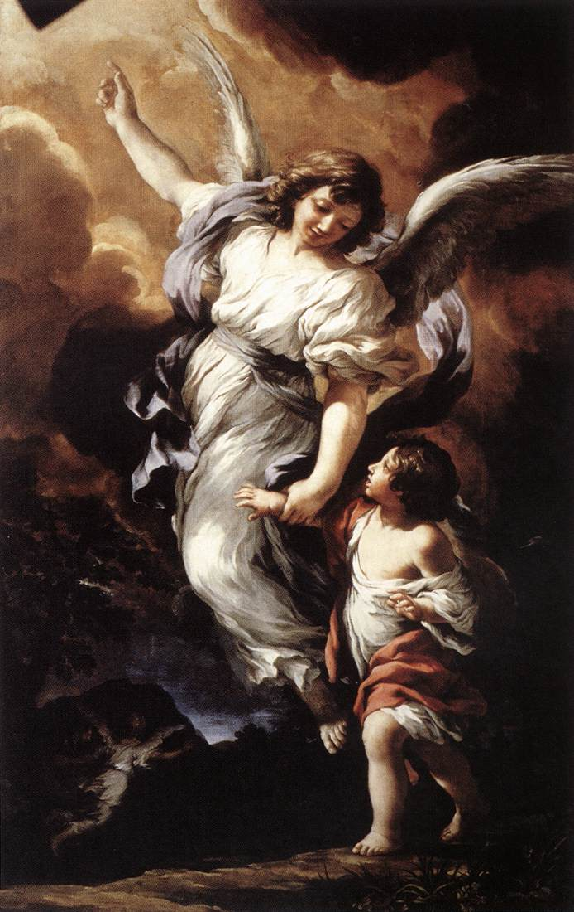
Angelo custode che guida un bambino (dipinto di Pietro da Cortona)
Consacrazione all'Angelo Custode
Santo Angelo Custode, tu che contempli sempre il volto del Padre nostro che è nei cieli, Dio mi ha affidato a te fin dall'inizio della mia vita. Di cuore ti ringrazio per la tua amorevole premura. A te mi consegno e ti prometto il mio amore e la mia fedeltà. Ti prego, proteggimi contro la mia stessa debolezza e contro gli assalti degli spiriti malvagi. Illumina la mia mente e il mio cuore, perché io riconosca e compia sempre la volontà di Dio; e guidami all'unione con Dio, Padre, Figlio e Spirito Santo. Amen.38
38 La principale missione degli angeli santi è la lode di Dio. Ma sono anche da Lui incaricati di condurre la terribile battaglia contro Satana e tutti gli spiriti malvagi, sotto il comando della santissima Vergine. La loro posizione è quindi essenziale nei piani vittoriosi della Donna vestita di sole contro il drago rosso: Ubriaca del sangue dei santi e del sangue dei martiri di Gesù. (Ap 17,6) E poiché in lotta essi sono sempre al nostro fianco, per darci forza e coraggio, per fasciare le nostre ferite e difenderci dal maligno, è importante restare sempre al loro seguito.
Vieni, Signore Gesù – Maranathà! Ap 22,20
Il Santissimo Nome di Gesù sia nel mio cuore, sia sulla mia bocca, sia sulla mia lingua.
Il Santissimo Nome di Gesù illumini la mia mente, purifichi la mia fantasia, rafforzi la mia volontà!
Il Santissimo Nome di Gesù sia in me, sia sopra di me, sia davanti a me, sia accanto a me, sia in tutti i miei pensieri, parole e opere.
Il Santissimo Nome di Gesù sia la mia difesa contro tutti gli assalti malvagi e le tentazioni.
Il Santissimo Nome di Gesù mi preservi da ogni pensiero gravoso, da ogni scoraggiamento e sfiducia.
Il Santissimo Nome di Gesù sia la mia incrollabile fiducia, la mia forza e il mio vigore, la mia speranza e sicurezza nella vita e nella morte! Amen.
Vedranno il suo volto e porteranno il suo nome sulla fronte. Non vi sarà più notte, e non avranno più bisogno di luce di lampada né di luce di sole.
Perché il Signore Dio li illuminerà. E regneranno nei secoli dei secoli. Ap 22,4-5